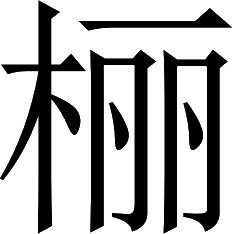
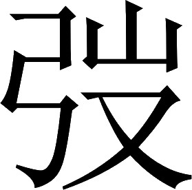

魏书 · 卷十三
钟繇华歆王朗传第十三
钟繇，字元常，颍川郡长社县人。钟繇小时候曾经与同族的一位父辈钟瑜一同去洛阳，路上遇到一个相面的人，那人说：“这个孩子有贵人的相貌，但注定要在水上遭到厄运。要尽力小心避免啊！”钟繇走了没有十里，过桥时马惊了，掉下河去几乎淹死。钟瑜因为相面的人说得准，更加看重钟繇；就供给他资金费用，使他能够专心学习。钟繇后来被举荐为孝廉，任尚书郎；又担任阳陵县令，因为得病离职。此后被三公府任命为下属。改任廷尉正、黄门侍郎。
注释
注释 〖1〗
繇：音yóu。
注释 〖2〗
长社：县名。县治在今河南长葛市东北。
注释 〖3〗
相者：看相的人。
注释 〖4〗
阳陵：县名。县治在今陕西泾阳县东南。
注释 〖5〗
三府：三公府。
裴注
裴注 ﹝一﹞
《先贤行状》曰：“钟皓字季明。温良笃慎，博学诗律，教授门生千有余人。为郡功曹，时太丘长陈寔，为西门亭长，皓深独敬异。寔少皓十七岁，常礼待与同分义。会辟公府，临辞，太守问：‘谁可代君？’皓曰：‘明府欲必得其人，西门亭长可用。’寔曰：‘钟君似不察人为意，不知何独识我？’皓为司徒掾，公出，道路泥泞；导从恶其相洒，去公车绝远。公椎轼言：‘司徒今日为独行耳！’还府向< ，铃下不扶；令揖掾属，公奋手不顾。时举府掾属，皆投劾出；皓为西曹掾，即开府门，分布晓语已出者，曰：‘臣下不能得自直于君。若司隶举绳墨，以公失宰相之礼，又不胜任，诸君终身何所任邪？’掾属以故皆止。都官果移西曹掾，问空府去意；皓召都官吏，以现掾属名，示之，乃止。前后九辟三府。迁南乡、林虑长，不之官。时郡中先辈为海内所归者，苍梧太守定陵陈稚叔，故黎阳令颍阴荀淑及皓。少府李膺，常宗此三人，曰：‘荀君清识难尚，陈、钟至德可师。’膺之姑为皓兄之妻，生子觐，与膺年齐，并有令名。觐又好学慕古，有退让之行。为童幼时，膺祖太尉修，言：‘觐似我家性：国有道不废，国无道免于刑戮者也。’复以膺妹妻之。觐辟州宰，未尝屈就。膺谓觐曰：‘孟轲以为人无好恶是非之心，非人也。弟于人，何太无皂白邪！’觐尝以膺之言白皓，皓曰：‘元礼，祖公在位，诸父并盛，韩公之甥，故得然耳。国武子好招人过，以为怨本；今岂其时！保身全家，汝道是也。’觐早亡。膺虽荷功名，位至卿佐，而卒陨身世祸。皓年六十九，终于家。皓二子：迪、敷，并以党锢不仕。”繇，则迪之（孙）〔子〕。
裴注 ﹝二﹞
谢承《后汉书》曰：“南阳阴修，为颍川太守，以旌贤擢俊为务。举五官掾张仲方正；察功曹钟繇、主簿荀彧、主记掾张礼、贼曹掾杜祐、孝廉荀攸、计吏郭图，为吏：以光国朝。”
这时，汉献帝在长安，李傕、郭汜等人在长安城中作乱，与关东地区断绝联系。太祖曹操兼任兖州牧之后，才开始派遣使者进贡上书。李傕、郭汜等人认为：“关东地区早想要自行拥立天子，现在曹操虽然派来使者，却不是他的真心。”商议扣留太祖使者，拒绝他的上贡。钟繇劝说李傕、郭汜等人说：“现今英雄并起，各人都假借天子的命令独断专行，只有曹兖州心系王室；如果拒绝他的忠心诚意，不符合那些正准备前来向天子致意的人的希望。”李傕、郭汜等人采用了钟繇的建议，对太祖予以优厚的回报；从此太祖得以与朝廷通使。
太祖既数听荀彧之称繇，又闻其说傕、汜，益虚心〖9〗。后傕胁天子，繇与尚书郎韩斌同策谋。天子得出长安，繇有力焉。
太祖已经好几次听到荀彧称赞钟繇，得知他对李傕、郭汜的劝说，印象更加深刻。后来李傕胁迫献帝，钟繇和尚书郎韩斌一同策划计谋对付。献帝得以离开长安，钟繇也是出了力的。
注释
注释 〖9〗
虚心：心里留下钟繇的位置。指印象深刻而有心招纳。
拜御史中丞。迁侍中、尚书仆射；并录前功，封东武亭侯。
后来他被任命为御史中丞。升任侍中、尚书仆射，还根据他建立的功劳封为东武亭侯。
这时关中的将领马腾、韩遂等人，各自拥有强兵相互争战。太祖正忙于处理中原地区的事务，对关中的事态深感忧虑。于是上表派遣钟繇以侍中的身份代理司隶校尉，持有节杖，督察关中各路军队，把后方事务委托给他；特别授予他处理公务时不必等候批示的权力。
繇至长安，移书腾、遂等，为陈祸福；腾、遂各遣子入侍。太祖在官渡，与袁绍相持，繇送马二千余匹给军。太祖与繇书曰：“得所送马，甚应其急。关右平定，朝廷无西顾之忧，足下之勋也。昔萧何镇守关中，足食成军，亦适当尔〖3〗。”
钟繇到达长安后，送信给马腾、韩遂等人，为他们陈述利害祸福；马腾、韩遂就各派一个儿子入京作为人质以表诚意。太祖在官渡，与袁绍相持，钟繇送去两千匹马供给军用。太祖给他回信说：“得到送来的马匹，很适应部队的急需。关中地区平定，朝廷没有后顾之忧，都是足下的功勋。从前萧何镇守关中，供给充足的食粮，保证了前方军队的需要，也就正像这样啊。”
注释
注释 〖3〗
亦适当尔：也正像这样。
以后，匈奴族单于在平阳郡作乱，钟繇率领各路军队包围他们，未能攻下；而袁尚所委派的河东郡太守郭援又到了河东，兵马强盛，将领们商议想要撤军离去。钟繇说：“袁氏正处在强盛的时候，郭援现在到来，关中众将暗中与他来往；他们之所以还没有全部反叛的原因，不过是顾忌我的威名罢了。如果我们撤军离去，向他们示弱；这里所有的居民，谁不是我们的仇敌？即使我想要回去，难道能走得到家吗？这是尚未开战就先自行败退啊！再说那郭援刚愎自用争强好胜，必定轻视我军；如果他们渡汾河扎营，我们趁他们正在渡河时打击他们，可以大获全胜。”这时张既劝说马腾来合击郭援，马腾派他的儿子马超，率领精锐部队迎面攻来。郭援到了以后，果然轻率挥兵渡过汾河；众人劝止，他不听从。渡过河的人还不到一半，钟繇发动攻击，打得对方大败。斩杀了郭援，降服了单于。事情经过记载在本书《张既传》中。以后河东郡人卫固制造叛乱，与张晟、张琰及高幹等人一同与朝廷为敌；钟繇又率众将打败了他们。
裴注
裴注 ﹝一﹞
司马彪《战略》曰：“袁尚遣高幹、郭援，将兵数万人，与匈奴单于寇河东。遣使与马腾、韩遂等连和，腾等阴许之。傅幹说腾曰：‘古人有言：“顺道者昌，逆德者亡。”曹公奉天子诛暴乱；法明国治，上下用命；有义必赏，无义必罚：可谓顺道矣。袁氏背王命；驱胡虏以陵中国，宽而多忌，仁而无断；兵虽强，实失天下心：可谓逆德矣。今将军既事有道，不尽其力，阴怀两端，欲以坐观成败；吾恐成败既定，奉辞责罪，将军先为诛首矣。’于是腾惧。幹曰：‘智者转祸为福。今曹公与袁氏相持，而高幹、郭援独制河东；曹公虽有万全之计，不能禁河东之不危也。将军诚能引兵讨援，内外击之，其势必举。是将军一举，断袁氏之臂，解一方之急：曹公必重德将军。将军功名，竹帛不能尽载也。唯将军审所择！’腾曰：‘敬从教！’于是遣子超，将精兵万余人，并将遂等兵，与繇会击援等，大破之。”
裴注 ﹝二﹞
《魏略》曰：“诏征河东太守王邑。邑以天下未定，心不愿征；而吏民亦恋邑，郡掾卫固及中郎将范先等，各诣繇求乞邑。而诏已拜杜畿为太守，畿已入界。繇不听先等，促邑交符。邑佩印绶，径从河北诣，自归。繇时治在洛阳，自以威禁失督司之法，乃上书自劾曰：‘臣前上言：故镇北将军领河东太守、安阳亭侯王邑，巧辟治官，犯突科条，事当推劾，检实奸诈。被诏书，当如所纠。以其归罪，故加宽赦。又臣上言：“吏民大小，各怀顾望，谓邑当还，拒太守杜畿；今皆反悔，其迎畿之官。”谨案文书：臣以空虚，被蒙拔擢，入充近侍，兼典机衡，忝膺重任，总统偏方。既无德政以惠民物，又无威刑以检不恪；至使邑违犯诏书，郡掾卫固诳迫吏民；讼诉之言，交驿道路；渐失其礼，不虔王命。今虽反悔，丑声流闻。咎皆由繇，威刑不摄。臣又疾病，前后历年，气力日微；尸素重禄，旷废职任，罪明法正。谨按侍中、守司隶校尉、东武亭侯钟繇，幸得蒙恩，以斗筲之才，仍见拔擢，显从近密，衔命督使。明知诏书深疾长吏政教宽弱，检下无刑；久病淹滞，众职荒顿，法令失张。邑虽违科，当必绳正法；既举文书，操弹失理；至乃使邑远诣阙廷，隳忝使命，挫伤爪牙。而固诳迫吏民，拒畿连月；今虽反悔，犯顺失正。海内凶赫，罪一由繇威刑暗弱；又繇久病，不任所职，非繇大臣当所宜为。繇轻慢宪度，不畏诏令，不与国同心；为臣不忠，无所畏忌，大为不敬；又不承用诏书，奉诏不谨；又聪明蔽塞，为下所欺，弱不胜任。数罪谨以劾，臣请法车征诣廷尉，治繇罪；大鸿胪削爵土。臣久婴笃疾，涉夏盛剧，命悬呼吸，不任部官。辄以文书付功曹从事马适议，免冠徒跣，伏须罪诛。’诏不听。”
自从天子向西迁徙，洛阳百姓几乎死亡流散光了；钟繇把关中民众迁徙过来，又招纳逃亡人口来充实，几年之内洛阳地区百姓户口逐渐增多。太祖征讨关中时，得以利用这里的人力资源，因此上表委任钟繇为前军师。
魏国建立，钟繇任大理。升任相国。文帝曹丕在东宫做太子时，赏赐给钟繇一只同时可以煮熟五种食品的“五熟釜”，在釜上铭刻的文字说：“现今堂堂魏国，充当汉室屏障。这位相国钟繇，真是王国栋梁。日夜谦恭工作，没有时间静养。百官纷纷学习，把他当做榜样。”几年后，因为他的下属西曹掾魏讽谋反，他被魏王下达策书免职。
注释
注释 〖10〗
五熟釜：内部分隔为五格因而可以同时煮熟五种食品的大锅。
注释 〖11〗
铭：铸在铜器上面的铭文。通常是句式整齐而押韵的短文。
注释 〖12〗
相：相国。钟：指钟繇。
注释 〖13〗
实干心膂：确实算得上是心腹大臣。
注释 〖14〗
靖恭：谦恭。
注释 〖15〗
匪遑：没有空闲。
注释 〖16〗
师师：效法。
注释 〖17〗
楷：以之为楷模。
注释 〖18〗
魏讽谋反：事见本书卷一《武帝纪》。
注释 〖19〗
策罢：皇帝下达策书罢官。就第：回家。
裴注
裴注 ﹝三﹞
《魏略》曰：“繇为相国，以五熟釜鼎范，因太子铸之。釜成，太子与繇书曰：‘昔有黄三鼎，周之九宝；咸以一体使调一味，岂若斯釜五味时芳？盖鼎之烹饪，以飨上帝，以养圣贤；昭德祈福，莫斯之美。故非大人，莫之能造；故非斯器，莫宜盛德。今之嘉釜，有逾兹美。夫周之尸臣，宋之考父，卫之孔悝，晋之魏颗；彼四臣者，并以功德勒名钟鼎。今执事寅亮大魏，以隆圣化；堂堂之德，于斯为盛。诚太常之所宜铭，彝器之所宜勒。故作斯铭，勒之釜口。庶可赞扬洪美，垂之不朽。’”
臣松之按《汉书•郊祀志》：孝宣时，美阳得鼎，京兆尹张敞上议曰：“按鼎有刻书曰：‘王命尸臣，官此栒邑。（尸主事之臣栒音荀豳地）赐尔鸾旂，黼黻琱戈。尸臣拜手稽首曰：敢对扬天子丕显休命！’此殆周之所以褒赐大臣，（子孙）大臣子孙刻铭其先功，藏之于宫庙也。”考父铭见《左氏传》，孔悝铭在《礼记》，事显故不载。《国语》曰：“昔克潞之役，秦来图败晋功，魏颗以其身（追）〔却退〕秦师于辅氏，亲止杜回；其勋铭于景钟，至于今不遗类，其子孙不可不兴也。”太子所称四铭者也。
《魏略》曰：“后太祖征汉中，太子在孟津，闻繇有玉玦；欲得之而难公言，密使临淄侯，转因人说之。繇即送之。太子与繇书曰：‘夫玉以比德君子，见美诗人。晋之垂棘，鲁之玙璠，宋之结绿，楚之和璞；价越万金，贵重都城；有称畴昔，流声将来。是以垂棘出晋，虞、虢双擒；和璧入秦，相如抗节。窃见玉书，称美玉“白若截肪，黑譬纯漆，赤拟鸡冠，黄侔蒸栗”。侧闻斯语，未睹厥状。虽德非君子，义无诗人；高山景行，私所慕仰。然四宝邈焉已远，秦、汉未闻有良匹。是以求之旷年，未遇厥真；私愿不果，饥渴未副。近见南阳宗惠叔称君侯昔有美玦，闻之惊喜，笑与抃俱。当自白书，恐传言未审；是以令舍弟子建，因荀仲茂转言鄙旨。乃不忽遗，厚见周称。邺骑既到，宝玦初至；捧跪发匣，烂然满目。猥以矇鄙之姿，得观希世之宝；不烦一介之使，不损连城之价；既有秦昭章台之观，而无蔺生诡夺之诳。嘉贶益腆，敢不钦承！’繇报书曰：‘昔忝近任，并得赐玦。尚方耆老，颇识旧物；名其符采，必得处所。以为执事有珍此者，是以鄙之，用未奉贡；幸而纡意，实以悦怿。在昔和氏，殷勤忠笃；而繇待命，是怀愧耻。’”
裴注 ﹝四﹞
《魏略》曰：“孙权称臣，斩送关羽。太子书报繇，繇答书曰：‘臣同郡故司空荀爽言：“人当道情。爱我者，一何可爱！憎我者，一何可憎！”顾念孙权，了更妩媚。’太子又书曰：‘得报，知喜南方。至于荀公之清谈，孙权之妩媚；执书嗢噱，不能离手。若权复黠，当折以汝南许劭月旦之评。权优游二国，俯仰荀、许，亦已足矣。’”
文帝即王位，复为大理。及践阼，改为廷尉，进封崇高乡侯。迁太尉，转封平阳乡侯。时司徒华歆、司空王朗，并先世名臣。文帝罢朝，谓左右曰：“此三公者，乃一代之伟人也；后世殆难继矣！”﹝一﹞
文帝继魏王位后，钟繇又任大理。到了文帝登上帝位，改任廷尉，晋升爵位为崇高乡侯。不久升任太尉，转封为平阳乡侯。当时司徒华歆、司空王朗，同是上一朝代的著名大臣。文帝退朝后对身边人说：“这三公，都是一代的伟人；将来大概难有后继之人了！”
裴注
裴注 ﹝一﹞
陆氏《异林》曰：“繇尝数月不朝会，意性异常。或问其故，云：‘常有好妇来，美丽非凡。’问者曰：‘必是鬼物，可杀之！’妇人后往，不即前，止户外。繇问何以，曰：‘公有相杀意。’繇曰：‘无此。’乃勤勤呼之，乃入。繇意恨，有不忍之心，然犹斫之，伤髀。妇人即出，以新绵拭血竟路。明日使人寻迹之，至一大冢：木中有好妇人，形体如生人；著白练衫，丹绣裲裆；伤左髀，以裲裆中绵拭血。叔父清河太守说如此。”清河，陆云也。
明帝即位，晋升钟繇爵位为定陵侯；增加封邑五百户，连同以前共一千八百户。又升任太傅。钟繇膝部有病，下拜起身不方便；当时华歆也因为年老患病，上朝晋见时都让他们二人带着轻便小车，由卫士抬上殿就座。这以后三公有病，就把这种做法视为惯例。
当初，太祖下令，让臣僚评论死刑是否可以改行宫刑来代替的问题。钟繇认为：“古代的肉刑，历代圣明君主都实行过；现在应该恢复，以代替死刑。”参加讨论的人认为这是民众不喜欢的做法，于是停止讨论这件事。到了文帝时设宴招待群臣，下诏说：“大理钟繇提出恢复肉刑，这确实是圣王的法律。各位公卿应当好好共同商议这件事。”议论还没确定下来，碰上有军事行动，再次停止了讨论。
太和中，繇上疏曰：“大魏受命，继踪虞、夏。孝文革法〖6〗，不合古道。先帝圣德，固天所纵〖7〗，坟典之业〖8〗，一以贯之。是以继世，仍发明诏〖9〗；思复古刑，为一代法。连有军事，遂未施行。陛下远追二祖遗意〖10〗，惜斩趾可以禁恶〖11〗，恨入死之无辜〖12〗；使明习律令，与群臣共议；出本当右趾而入大辟者〖13〗，复行此刑。《书》云：‘皇帝清问下民〖14〗，鳏寡有辞于苗〖15〗。’此言尧当除蚩尤、有苗之刑〖16〗，先审问于下民之有辞者也〖17〗。若今蔽狱之时〖18〗，讯问三槐、九棘、群吏、万民〖19〗。使如孝景之令〖20〗，其当弃市欲斩右趾者许之〖21〗。其黥、劓、左趾、宫刑者，自如孝文，易以髡、笞〖22〗。能有奸者，率年二十至四五十；虽斩其足，犹任生育〖23〗。今天下人少于孝文之世，下计所全〖24〗，岁三千人。张苍除肉刑〖25〗，所杀岁以万计；臣欲复肉刑，岁生三千人。子贡问能济民可谓仁乎〖26〗？子曰：‘何事于仁〖27〗，必也圣乎〖28〗！尧、舜其犹病诸〖29〗！’又曰：‘仁远乎哉〖30〗？我欲仁〖31〗，斯仁至矣〖32〗。’若诚行之，斯民永济。”
太和年间，钟繇上疏说：“大魏承受天命，效法虞舜、夏禹。汉文帝改革刑法废除肉刑，不合于古道。先帝的圣德，是上天所赐予的，他对古代的文献，都非常了解。因此他继位之后，接连颁发英明的诏令；打算恢复古代的肉刑，作为一代的法典。因为接连有军事行动，结果没有施行。陛下继承太祖武皇帝和高祖文皇帝的遗志，认为砍脚的刑罚可以禁止罪恶却被废止很是可惜，为无辜判死刑的人感到遗憾，让了解和熟悉刑律法令的人，与众大臣共同商议；挑出本当斩去右脚而划入死刑的，恢复执行砍脚的刑罚。《尚书•吕刑》上说：‘皇帝详细询问下民，得知鳏夫寡妇对有苗氏的刑罚不满意。’这是说尧将要废除蚩尤、有苗的酷刑时，先详细询问百姓中那些有怨恨之辞的人。就像现在断案时，询问三公、九卿、百官、万民百姓一样。我以为应当像汉景帝那样发布法令，对那些处以弃市死刑的犯人，他们自己如果想要改为砍右脚的肉刑，就听从他们。对那些本应当处以刺面、割鼻、砍左脚、割生殖器等肉刑的人，仍然依照汉文帝的办法，改为剃光头发做苦工或鞭打等刑罚。犯通奸罪的男女犯人，大多数年纪在二十到四五十岁之间；即使砍了他们的脚，依然还能够生育。现今全国人口少于汉文帝的时代，我的建议如果实行，每年约能保全三千人的生命。过去张苍废除肉刑，所杀的人每年反而数以万计。为臣想要恢复肉刑，每年却可以使三千人生存下来。当年子贡问能够拯救百姓就可以称为仁吗？孔子说：‘哪里仅仅是仁，那一定算是最高的德泽了！尧、舜大概也难以做到呢！’又说：‘仁难道离我们很远吗？我想要它，它就来了。’如果确实能实行肉刑，百姓将能永久得到好处。”
注释
注释 〖6〗
孝文革法：西汉孝文帝宣布废除肉刑，改用其他刑罚代替。详见《汉书》卷二十三《刑法志》。
注释 〖7〗
纵：赐予。
注释 〖8〗
坟典：指古代的文献。坟是三坟，传说为伏羲、神农、轩辕三皇时代的典籍。典是五典，传说为少吴、颛顼、高辛、唐尧、虞舜五帝时代的典籍。坟典之业即文化事业。
注释 〖9〗
仍：频频。
注释 〖10〗
二祖：指太祖曹操、高祖曹丕。
注释 〖11〗
斩趾：砍脚。
注释 〖12〗
恨：对事情感到遗憾。入死之无辜：指死刑犯中其实可以判处稍轻刑罚从而保住性命的那些人。
注释 〖13〗
本当右趾：本来可以判处砍掉右脚的刑罚。大辟：死刑。
注释 〖14〗
清问：详细询问。这两句出自《尚书•吕刑》。
注释 〖15〗
有辞于苗：对有苗氏的刑罚有不满的话。
注释 〖16〗
蚩尤：传说中古代东方九黎族的首领。有兄弟八十一人。后被轩辕黄帝击败杀死，见《史记》卷一《五帝本纪》。有苗：古代南方江淮流域的部族名。又叫三苗。简称苗。
注释 〖17〗
审问：详细询问。
注释 〖18〗
蔽狱：断案。
注释 〖19〗
三槐：三公。九棘：九卿。
注释 〖20〗
孝景：即刘启（前 188—前 141）。西汉皇帝。前 157 至前 141 年在位。他继续奉行汉文帝时的政治方针，平定吴、楚七国之乱，巩固中央集权，又改田赋十五税一为三十税一，减轻人民负担。以往把他和文帝时的统治并称为“文景之治”。事详《史记》卷十一、《汉书》卷五。
注释 〖21〗
当弃市欲斩右趾者：被判处死刑中弃市这一等的犯人有愿意用砍右脚代替死刑的。
注释 〖22〗
易以髡、笞：用髡刑和笞刑来代替。汉文帝废除肉刑，并规定：该判肉刑中黥面者，改为做苦工五年；该判肉刑中割鼻者，改为笞打三百下；该判肉刑中砍左脚者，改为笞打五百下。又曾宣布去除宫刑。分见《汉书》卷二十三《刑法志》、同书卷四十九《晁错传》。
注释 〖23〗
任：能够。
注释 〖24〗
下计：对自己所作建议的谦虚说法。全：全活性命。
注释 〖25〗
张苍（？—前 152）：河南郡阳武（今河南原阳县东南）人。秦时任御史。西汉初，由地方行政官员升到中央，在汉文帝时任丞相十五年。擅长天文历算，一百多岁时死。传见《史记》卷九十六、《汉书》卷四十二。除肉刑：汉文帝废除肉刑，曾经由张苍与御史大夫冯敬联名提出以笞刑来替代的具体办法，所以钟繇这样说。汉代用来执行笞刑的刑具长五尺，宽一寸，厚半寸。犯人受刑三百次后，往往被打死，笞刑等于是死刑。汉文帝废除肉刑代之以笞刑的本意是想表示仁慈，结果反而造成犯人大量死亡，以致达到每年上万人之多。详见《汉书》卷二十三《刑法志》。
注释 〖26〗
子贡（前 520—？）：姓端木，名赐，字子贡。卫国人。孔子的学生。善于言辞，又有经商才能。传见《史记》卷六十七《仲尼弟子列传》。以下他与孔子的问答见于《论语•雍也》。
注释 〖27〗
何事于仁：哪里只能算是仁道。
注释 〖28〗
必也圣乎：一定属于最高的德泽。
注释 〖29〗
其犹病诸：或许也难以做到。
注释 〖30〗
仁远乎哉：仁难道离我们很远吗。
注释 〖31〗
我欲仁：我要仁。
注释 〖32〗
斯仁至矣：仁就来了。这三句出自《论语•述而》。孔子的言外之意，是说能不能做到仁完全看你本人愿不愿意去做。
书奏，诏曰：“太傅学优才高，留心政事；又于刑理深远。此大事，公卿群僚，善共平议。”
上奏以后，明帝下诏说：“太傅学问优秀才华出众，留心政事；又深通刑法理论。这是件大事，公卿众大臣们要一起好好评议。”
司徒王朗的评议认为：“钟繇想要减轻死刑的律条，增加砍脚的刑罚；这就好比是把躺下的死人变成竖立的活人，当然是好事情。但是为臣愚蠢，仍然有稍稍不同的意见。本朝制定的五大类刑罚，都明确记载在法律条文之中；本来就有比死刑轻一等的刑罚，不处死刑，自然就可以判比死刑轻一等的刑罚了。这个规定施行已经很久了，不必借助斧凿施行肉刑，再来拉开刑罚的档次。前世的仁慈君主，不忍心于肉刑的惨虐残酷，因此才废弃不用；从不用肉刑以来，已经过了几百年。现在突然恢复实行，恐怕减轻死刑的文书还没显现在万民眼前，而有关我们滥施肉刑的消息已经宣扬到敌国耳中了：这可不是用来使边远人民归附的做法。现在可以按照钟繇所想要减轻的那些死罪种类，把死刑改判为剃光头发做苦役的刑罚；如此惩处还嫌太轻的那些罪行，可以把犯人做苦役的年限成倍加长。这样做，可以说对内有起死回生不可估量的恩德，对外又没有用砍脚代替做苦役那样骇人听闻的名声。”
注释
注释 〖33〗
刖（yuè）刑：砍脚的刑罚。
注释 〖34〗
起偃为竖：让平卧的死人变成直立的活人。即起死回生之意。
注释 〖35〗
五刑：曹魏制定的五大类刑罚。有死刑、髡刑、完刑、作刑、赎刑。每一类中又分若干种。见《晋书》卷三十《刑罚志》。
注释 〖36〗
减死一等：比死刑低一等。指髡刑中的罚做苦工五年。
注释 〖37〗
假：借助。
注释 〖38〗
罪次：刑罚的档次。
注释 〖39〗
问：消息。寇仇：指吴、蜀二敌国。
注释 〖40〗
来远人：让远方的人民前来归顺。
注释 〖41〗
使减死之髡刑：让他们免于处死，改而承受髡刑中囚禁做苦工五年的刑罚。
注释 〖42〗
居作：指被囚禁做苦工。
注释 〖43〗
不赀（zī）：不可估量。
注释 〖44〗
釱（dì）：古代的刑具，即足镣。这里指代髡刑。骇耳：听起来令人吃惊。
议者百余人，与朗同者多。帝以吴、蜀未平，且寝。﹝一﹞
参加这次讨论的有一百多人，意见与王朗相同的人居多。明帝因为吴、蜀尚未平定，暂且停止了这次讨论。
裴注
裴注 ﹝一﹞
袁宏曰：“夫民心乐全而不能常全，盖利用之物悬于外，而嗜欲之情动于内也。于是有进取贪竞之行，希求放肆之事。进取不已，不能充其嗜欲，则苟且侥幸之所生也；希求无厌，无以惬其欲，则奸伪忿怒之所兴也。先王知其如此，而欲救其弊，或先德化以陶其心；其心不化，然后加以刑辟。《书》曰：‘百姓不亲，五品不逊。汝作司徒，而敬敷五教。蛮夷猾夏，寇贼奸宄。汝作士，五刑有服。’然则德、刑之设，参而用之者也。三代相因，其义详焉。《周礼》：‘使墨者守门，劓者守关，宫者守内，刖者守囿。’此肉刑之制可得而论者也。荀卿亦云：‘杀人者死，伤人者刑，百王之所同，未有知其所由来者也。’夫杀人者死，而相杀者不已；是大辟可以惩未杀，不能使天下无杀也。伤人者刑，而害物者不息；是黥、劓可以惧未刑，不能使天下无刑也。故将欲止之，莫若先以德化；夫罪过彰著，然后入于刑辟；是将杀人者不必死，欲伤人者不必刑。纵而弗化，则陷于刑辟。故刑之所制，在于不可移之地。礼教则不然，明其善恶，所以潜劝其情，消之于未杀也；示之耻辱，所以内愧其心，治之于未伤也；故过微而不至于著，罪薄而不及于刑。终入罪辟者，非教化之所得也。故虽残一物之生，刑一人之体，是除天下之害，夫何伤哉？率斯道也，风化可以渐淳，刑罚可以渐少，其理然也。苟不能化其心，而专任刑罚；民失义方，动罹刑网；求世休和，焉可得哉？周之成、康，岂按三千之文而致刑措之美乎？盖德化渐渍，致斯有由也。汉初惩酷刑之弊，务宽厚之论；公卿大夫，相与耻言人过。文帝登朝，加以玄默。张武受赂，赐金以愧其心；吴王不朝，崇礼以训其失。是以吏民乐业，风流笃厚，断狱四百，几致刑措。岂非德刑兼用已然之效哉！世之欲言刑罚之用，不先德教之益，失之远矣！今大辟之罪，与古同制。免死以下，不过五岁；既释钳锁，复得齿于人伦。是以民无耻恶，数为奸盗，故刑徒多而乱不治也。苟教之所去，罚当其罪；一罹刀锯，没身不齿；邻里且犹耻之，而况于乡党乎？而况朝廷乎？如此，则夙沙、赵高之俦，无施其恶矣。古者察其言，观其行，而善恶彰焉。然则君子之去刑辟，固已远矣。过误不幸，则八议之所宥也。若夫卞和、史迁之冤，淫刑之所及也。苟失其道，或不免于大辟，而况肉刑哉！《汉书》：‘斩右趾，及杀人先自言告，吏坐受赇，守官物而即盗之，皆弃市。’此班固所谓当生而令死者也。今不忍刻截之惨，而安剿绝之悲；此最治体之所先，有国所宜改者也。”
太和四年（公元 230），钟繇去世。明帝身穿丧服前往吊唁，谥他为成侯。钟繇的儿子钟毓继承了他的爵位。当初，文帝曾把钟毓的封邑分出一部分，封钟繇的弟弟钟演和钟演的儿子钟劭、孙子钟豫为列侯。
毓字稚叔。年十四，为散骑侍郎，机捷谈笑，有父风。
钟毓，字稚叔。十四岁时做了散骑侍郎，机智敏捷善于谈笑，有他父亲钟繇的风度。
太和初年，蜀国丞相诸葛亮包围了祁山。明帝想要亲自西征，钟毓上疏说：“计谋以在朝廷策划时就稳操胜算为贵，战功以运筹帷幄为上；不用走下殿堂，而决定胜负于千里之外。君王的车驾应该镇守在国土中心，以作为四方军事威势的后援。现在大军西征，虽然威风百倍；而在关中的巨额花费，要付出的就不是一点点了。况且在盛暑时节出动军队，曾被《诗经》作者描绘得很困难。当前实在不是陛下车驾出动的时机。”后来钟毓升任黄门侍郎。
当时正在大兴土木修造洛阳皇宫，明帝暂时迁到许昌住，正月初一日，全国官员都应当到许昌来朝见。许昌地方狭窄，于是在城南用毛毡搭成临时宫殿，演出杂技等娱乐节目，百姓疲于劳役。钟毓上言劝谏，认为：“现在水旱灾害无常，国库空虚，这一类事情，应该等待丰收年份再去进行。”又建议说：“应该恢复在关内地区开垦荒地，使百姓把力气用到农业上。”他的建议得到施行。
正始年间，钟毓任散骑常侍。大将军曹爽，在盛夏时节发动军队攻伐蜀国；蜀国拒守，大军不能推进。曹爽正想要增加兵力，钟毓给他写信说：“我认为在朝廷上谋划时就稳操胜算的好计谋，不会让将士去冒飞箭滚石的危险；王者之兵，虽然出动而用不着血战疆场。虞舜象征性舞动盾牌和长斧，就使有苗氏前来归服；晋文公守信用按时撤军，就使原国的敌军举手投降；因此不必像吴汉那样长驱直入江关，像韩信那样驰骋在井陉。见可而进，知难而退，是自古用兵之道。希望公侯您仔细考虑啊！”曹爽最后果然无功而返。后来钟毓因为不合曹爽的心意，调任侍中。出任魏郡太守。曹爽被诛杀后，钟毓又入京，先后任御史中丞、侍中和廷尉。关于上司、父亲已死，下属、儿子可以代为申诉冤屈；以及士兵封侯以后，他们一旦死去，妻子不再由官府强迫嫁给他人等项规定，都是钟毓所创设的。
注释
注释 〖7〗
不临矢石：指不需要动手作战。
注释 〖8〗
干戚：盾牌和长斧。传说在虞舜时，有苗族不服从，舜没有派兵进攻，而是致力搞好内政，只在殿堂上象征性舞动了一下盾牌和长斧，有苗族就来归顺了。见《淮南子•齐俗训》。
注释 〖9〗
舍：三十里的行军路程。原：先秦国名。在今河南济源市西北。前 635 年，晋文公出兵围攻原国，下令三天后晋军仍然攻不下原国城池，就解围撤退。三天后他果然履行诺言，原国敬佩晋文公讲信义，在晋军后撤三十里时主动投降。事见《左传》僖公二十五年。
注释 〖10〗
吴汉（？—公元 44）：字子颜。南阳郡宛县人。早年以贩马为业，新莽末年追随刘秀起兵，屡建战功。刘秀即位后，任大司马，封广平侯。率军进入益州消灭公孙述割据势力，名列东汉二十八名开国元勋之一。传见《后汉书》卷十八。江关：关隘名。在今重庆市原奉节县东长江北岸的赤甲山上，扼三峡西口。公元35 年，吴汉率数万精兵由江关进入益州，攻灭公孙述。
注释 〖11〗
井陉（xíng）：关隘名。在今河北井陉县北井陉山上。前 204 年，汉将韩信在此以兵数万，击破号称二十万众的赵国军队，俘赵王歇。事见《史记》卷九十二《淮阴侯列传》。
注释 〖12〗
没：死亡。
注释 〖13〗
理谤：申冤。
注释 〖14〗
士：这里指专门承担兵役的士家。
注释 〖15〗
配嫁：官方代为选配对象让寡妇再嫁。当时社会中男多女少，为了促进人口增长，官方采取强制寡妇再嫁的措施。选配的对象中，军队将士又是重点，这样既能保证将来的兵源，又可稳定军心。
诸葛诞反叛，大将军司马昭打算亲自到寿春县讨伐诸葛诞。碰上吴国大将孙壹率领兵众来投降，有人认为：“吴国刚刚有这场变故，必定不能再次出兵。我们在东线的兵力已很多，可以等待下一步的消息。”钟毓认为：“评论事势估量敌情，应当以己之心，度人之腹。现在诸葛诞把整个淮南土地，全都送给吴国；而孙壹率领来的，人口不到一千，士兵不过三百。吴国的损失，几乎没有什么。如果寿春的包围没有解除，而吴国国内转趋安定，未必可以肯定他们不出兵。”大将军说：“对！”随即带着钟毓出发。
淮南既平，为青州刺史，加后将军；迁都督徐州诸军事，假节；又转都督荆州。景元四年薨。追赠车骑将军，谥曰惠侯。子骏嗣。
淮南平定以后，钟毓任青州刺史，加任后将军；又升为徐州各军总指挥，持有节杖；又转任荆州各军总指挥。景元四年（公元263），钟毓去世。追赠为车骑将军，谥为惠侯。钟毓的儿子钟骏继承了他的爵位。
毓弟会，自有传。
钟毓的弟弟钟会，本书另有传记进行记叙。
华歆，字子鱼，平原郡高唐县人。高唐是齐国故地有名的城市，当地的社会名流无不在市内游玩。华歆在县府当吏员时，假日离开官府，就回家关门不出。他议论公正，始终不毁谤伤人。同郡人陶丘洪也是知名人士，自认为见解超过华歆。当时王芬与一些豪杰人物计划废掉汉灵帝。事情经过记载在本书《武帝纪》中。王芬暗中召集华歆、陶丘洪共同确定计策，陶丘洪想要前去参与，华歆劝住他说：“废立皇帝是一件大事，连伊尹、霍光都感到难办。王芬性情粗疏又没有军事才能，这事必定不能成功，一旦失败灾祸将要殃及族人。你还是不要去！”陶丘洪听从了华歆的话没有去。后来王芬果然失败，陶丘洪这才服气。
注释
注释 〖1〗
名都：名城。
注释 〖2〗
衣冠：指官员和社会名流。游行：游逛。
注释 〖3〗
休沐：休息和沐浴。当时官员每隔一定时间要放假回家休息沐浴，叫休沐或休。
注释 〖4〗
明见：对事物的洞察和判断。
注释 〖5〗
伊：指伊尹。伊尹曾放逐商王太甲。霍：指霍光（？—前 68），字子孟。河东郡平阳（今山西临汾市西南）人。西汉昭帝时任大司马、大将军，封博陆侯，执掌朝政。昭帝死，他先迎立昌邑王刘贺为帝，不久废刘贺，改立宣帝。前后执政二十年，减轻民众负担，有利生产发展。传见《汉书》卷六十八。
注释 〖6〗
疏：粗疏。不武：没有军事才能。
华歆被举荐为孝廉，朝廷任命他为郎中。因病，辞去官职。汉灵帝去世后，何进辅政，征召河南郡人郑泰、颍川郡人荀攸及华歆等人。华歆到达后，任尚书郎。董卓把天子迁到长安，华歆请求出京任下邽县令；因病未能赴任，于是从蓝田县到了南阳郡。
这时袁术在穰县，留下了华歆。华歆劝说袁术进军讨伐董卓，袁术没有采用他的建议。华歆想要离开，碰上天子派太傅马日"安抚关东，马日"就任命华歆为下属。华歆东到徐州，朝廷下诏任命他为豫章郡太守；由于在处理政事上清静而不烦扰，受到当地官吏民众的感激爱戴。
注释
注释 〖9〗
幅巾：包头的头巾。东汉末年以来，士大夫在平时喜欢以幅巾包头而不戴冠帽，认为这是风雅的装束。
裴注
裴注 ﹝五﹞
胡冲《吴历》曰：“孙策击豫章，先遣虞翻说歆。歆答曰：‘歆久在江表，常欲北归；孙会稽来，吾便去也。’翻还报策，策乃进军。歆葛巾迎策，策谓歆曰：‘府君年德名望，远近所归；策年幼稚，宜修子弟之礼。’便向歆拜。”华峤《谱叙》曰：“孙策略有扬州，盛兵徇豫章，一郡大恐。官属请出郊迎，教曰：‘无然。’策稍进，复白发兵，又不听。及策至，一府皆造阁，请出避之。乃笑曰：‘今将自来，何遽避之？’有顷，门下白曰：‘孙将军至！’请见，乃前，与歆共坐，谈议良久，夜乃别去。义士闻之，皆长叹息而心自服也。策遂亲执子弟之礼，礼为上宾。是时四方贤士大夫避地江南者，甚众，皆出其下，人人望风。每策大会，坐上莫敢先发言；歆时起更衣，则论议喧哗。歆能剧饮，至石余不乱。众人微察，常以其整衣冠为异。江南号之曰‘华独坐’。”虞溥《江表传》曰：“孙策在椒丘，遣虞翻说歆。翻既去，歆请功曹刘壹入议。壹劝歆住城，遣檄迎军。歆曰：‘吾虽刘刺史所置；上用，犹是剖符吏也。今从卿计，恐死有余责矣。’壹曰：‘王景兴既汉朝所用，且尔时会稽人众盛强，犹见原恕；明府何虑？’于是夜逆作檄，明旦出城，遣吏赍迎。策便进军，与歆相见。待以上宾，接以朋友之礼。”
孙盛曰：“夫大雅之处世也，必先审隐显之期，以定出处之分；否则括囊以保其身，泰则行义以达其道。歆既无夷、皓韬邈之风，又失王臣匪躬之操；故挠心于邪儒之说，交臂于陵肆之徒；位夺于一竖，节堕于当时。昔许、蔡失位，不得列于诸侯；州公实来，鲁人以为贱耻：方之于歆，咎孰大焉！”
后来孙策死了。太祖曹操正在官渡，上表给天子，征召华歆。孙权不想让他走，华歆对孙权说：“将军您奉天子之命，刚开始与曹公结下友谊，情分关系尚未巩固。让我得以为将军在曹公那里尽力，岂不是有益吗？现在空留下我，犹如养了个没用的东西：这不是好主意。”孙权很高兴，这才放走了华歆。宾客旧友为华歆送行的有一千多人，赠送黄金数百斤。华歆都不拒绝，暗中写好标记；到了临走时，把各种礼物都聚在一起，对大家说：“我本来不想拒绝各位的心意，但所接受的太多。想我单车远行，将因财物太多而遭遇危险。希望各位宾客替我考虑。”众人于是各自收回了自己的赠品，对华歆的德行深为佩服。
歆至，拜议郎，参司空军事。入为尚书。转侍中，代荀彧为尚书令。太祖征孙权，表歆为军师。魏国既建，为御史大夫。
华歆到了太祖那里，受任为议郎，在司空府参谋军事。又任尚书。转任侍中，代替荀彧任尚书令。太祖出征孙权，上表任华歆为军师。魏国建立后，华歆为御史大夫。
文帝曹丕即魏王位，拜华歆为相国，封为安乐乡侯。到了文帝当皇帝后，又改任司徒。华歆素来清贫，俸禄赏赐用来救济亲戚故旧，家里没有一担米的储藏。朝廷曾赐给公卿以女奴，只有华歆把她们放出去嫁人。文帝感叹下诏说：“华司徒，是国家的优秀老臣，协助我调和阴阳管理众事。现在我享用着丰盛的膳食，而司徒却吃蔬菜，这是很不合适的。”特别赐给华歆御衣，又为他的妻子儿女都制作了衣服。
注释
注释 〖1〗
担石：形容粮食不多。十斗为一石，两石为一担。担又作儋。
注释 〖2〗
没入生口：变成官府奴隶的男女人口。
注释 〖3〗
太官：负责皇帝膳食的机构。这里指皇帝的膳食。重膳：多种菜肴。
注释 〖4〗
无谓：不合适。
裴注
裴注 ﹝一﹞
《魏书》曰：“文帝受禅，歆登坛，相仪，奉皇帝玺绶，以成受命之礼。”华峤《谱叙》曰：“文帝受禅，朝臣三公以下，并受爵位。歆以形色忤时，徙为司徒，而不进爵。魏文帝久不怿，以问尚书令陈群曰：‘我应天受禅，百辟群后，莫不人人悦喜，形于声色；而相国及公独有不怡者，何也？’群起，离席长跪，曰：‘臣与相国，曾臣汉朝，心虽悦喜，义形其色；亦惧陛下实应且憎。’帝大悦，遂重异之。”
裴注 ﹝二﹞
孙盛曰：“盛闻庆赏威刑，必宗于主；权宜宥恕，出自人君。子路私馈，仲尼毁其食器；田氏盗施，《春秋》著以为讥。斯褒贬之成言，已然之显义也。孥戮之家，国刑所肃；受赐之室，乾施所加；若在哀矜，理无偏宥。歆居股肱之任，同元首之重，则当公言皇朝，以彰天泽；而默受嘉赐，独为君子；既犯作福之嫌，又违必去之义。可谓匹夫之仁，蹈道则未也。”
《魏书》曰：“歆性周密，举动详慎。常以为人臣陈事，务以讽谏合道为贵；就有所言，不敢显露：故其事多不见载。”华峤《谱叙》曰：“歆淡于财欲，前后宠赐，诸公莫及，然终不殖产业。陈群常叹曰：‘若华公，可谓通而不泰，清而不介者矣。’”《傅子》曰：“敢问今之君子？曰：‘袁郎中积德行俭，华太尉积德居顺；其智可及也，其清不可及也。事上以忠，济下以仁；晏婴、行父，何以加诸？’”
裴注 ﹝三﹞
《魏书》曰：“又赐奴婢五十人。”
三公府建议：“举荐孝廉，本来是以德行为标准，请不再用经学考试来选择。”华歆认为：“天下动乱以来，六经传习荒废；应当致力于儒学的保存和振兴，以发扬王道。制订法规，是用来防止衰落保持兴盛的。现在如果听任举荐孝廉不用经过经学考试，恐怕经学从此就要荒废了。如果有优异人才，可以特别征召使用。我们担忧的是没有人才，哪里担忧有人才而不能得到呢！”文帝听从了他的意见。
黄初中，诏公卿举独行君子；歆举管宁，帝以安东征之。
黄初年间，朝廷下诏要公卿举荐有独特品行的君子；华歆举荐了管宁，文帝用安车征召。
明帝即位后，晋升华歆爵位，封为博平侯；增加封邑五百户，连同以前的共一千三百户，转任为太尉。华歆自称有病请求退职，把官位让给管宁。明帝没有允许。临近朝廷聚会时，明帝派遣散骑常侍缪袭，去向华歆传达自己的旨意说：“朕新近治理政事，日理万机。唯恐见闻判断不明智，正要依赖有德行的大臣，在左右帮助我；而您却多次称病辞让职位。选择君主，不在朝廷占据位置；抛弃名利，不愿终身做官；这类事例古代确实有过，不过周公、伊尹就不是这样。洁身自好，追求节操的高尚，平常人可以那样做，却不希望您那样。您还是勉力来参加朝会吧，这样对朕有帮助。朕将在餐桌前站立，也让百官都约束自己；等您到来后，朕才会入席就座。”明帝又命令缪袭：“等到华歆答应起身前来了，你再回来。”华歆不得已，只好留任原职。
注释
注释 〖1〗
缪袭（公元 186—245）：传附本书卷二十一《刘劭传》。
注释 〖2〗
喻指：表达意思。
注释 〖3〗
究：终。
注释 〖4〗
顾：不过。
注释 〖5〗
徇节：追求节操的高尚。
注释 〖6〗
总己：这里指约束自己，恭敬等待。
裴注
裴注 ﹝一﹞
《列异传》曰：“歆为诸生时，尝宿人门外。主人妇，夜产。有顷，两吏诣门，便辟易却，相谓曰：‘公在此。’踌躇良久，一吏曰：‘籍当定，奈何得住？’乃前向歆拜，相将入。出，并行，共语曰：‘当与几岁？’一人曰：‘当三岁。’天明，歆去。后欲验其事，至三岁，故往问儿消息，果已死。歆乃自知当为公。”
臣松之按《晋阳秋》，说魏舒少时寄宿事，亦如之；以为理无二人俱有此事，将由传者不同。今宁信《列异》。
太和年间，明帝派遣曹真从子午谷道讨伐蜀国，自己向东到了许昌。华歆上疏说：“自从军事动乱发生以来，已超过了二十四年。大魏承受天命，陛下凭借圣德建设周成王、周康王那样兴隆的事业；应该弘扬一个时代的政治，追随夏禹、商汤、周武王的足迹。虽然还有吴、蜀两个敌国依凭险阻苟延残喘，如果圣朝教化日益发展，偏远地方的人民向往德政，也将背负幼儿前来投奔。兵这种东西，要到不得已的时候才用，所以平时要收回军队等待合适的使用时机。为臣确实希望陛下先留心于治理国家的方法，把出兵征伐作为以后的事情。再说从千里之外运送军粮，不是用兵的有利条件；越过险阻深入敌国，不会有大获全胜的功效。听说今年征调兵役，很影响农业生产。治国的君主以民为基础，而民以穿衣吃饭为根本。假使我国境内没有饥饿寒冷的忧虑，百姓没有离开故土的心思，那样就是国家最大的幸运；两个敌国之中将会发生的灾祸，可以坐等其到来。为臣身在宰相之位，年老疾病日益加深，微贱的生命将要走到尽头；恐怕不能再侍奉陛下了，所以不敢不竭尽臣子的忠诚，希望陛下裁决考察！”
明帝答复说：“您深入考虑国家大计，我很是赞赏。敌国凭借仗恃山川险要，太祖武皇帝、高祖文皇帝从前率兵讨伐，尚且不能攻克平定；我岂敢自以为了不起，说必定能消灭他们呢！只不过众将认为，如果不试探进攻一下，敌方就不会疲劳；因此才出兵显示武力，以寻找他们的破绽。如果天时还没到来，周武王军队半途返回，已有前代事例作为榜样。朕将不会忘记您的告诫。”当时正有秋季大雨，明帝下诏令曹真带领军队返回。
太和五年（公元 231），华歆去世。谥号是敬侯。由他的儿子华表继承爵位。当初，文帝曾分出华歆一部分封邑，封华歆的弟弟华缉为列侯。华表，在咸熙年间曾经当过尚书。
裴注
裴注 ﹝一﹞
《魏书》云：“歆，时年七十五。”
裴注 ﹝二﹞
华峤《谱叙》曰：“歆有三子：表，字伟容。年二十余，为散骑侍郎。时同僚诸郎，共平尚书事，年少，并兼厉锋气，要（君）名誉。尚书事至，或有不便，故遗漏不视；及传书者去，即入深文论驳。惟表不然，事来有不便，辄与尚书共论尽其意；主者固执，不得已，然后共奏议。司空陈泰等，以此称之。仕晋，历太子少傅、太常。称疾致仕，拜光禄大夫。性清淡，常虑天下退理。司徒李胤、司隶王（密）〔弘〕等常称曰：‘若此人者，不可得而贵，不可得而贱，〔不可得而亲〕，不可得而疏。’中子博，历三县，内史，治有名迹。少子周，黄门侍郎、常山太守。博学有文思。中年遇疾，终于家。表有三子：长子廙，字长骏。《晋诸公赞》曰：‘廙有文翰。’历位尚书令、太子少傅；追赠光禄大夫、开府。峤字叔骏。有才学，撰《后汉书》，世称为良史。为秘书监、尚书。澹字玄骏。最知名，为河南尹。廙三子：昆字敬伦，清粹有检，为尚书；荟字敬叔，《世语》称荟贵正；恒宇敬则，以通理称。昆，尚书；荟，河南尹；恒，左光禄大夫、开府。澹子轶，字彦夏。有当世才志，为江州刺史。”
王朗，字景兴，东海郡郯县人。因为通晓经学，被授官为郎中。又出任菑丘县长。他的老师是太尉杨赐；杨赐去世，他放弃官职穿孝服居丧。后来被举荐为孝廉，三公府任命他为下属，他都没有接受。徐州刺史陶谦，又举荐王朗为茂才。
当时汉献帝在长安，关东义兵纷纷起事。王朗在陶谦手下当治中，他和别驾赵昱等人规劝陶谦说：“《春秋》上说，‘请求诸侯信服自己，不如起兵救援天子用行动做表率’。现在天子流亡在西京，应该派遣使者去承受天子的命令。”陶谦于是派赵昱带着奏章到长安。天子嘉许他的心意，任命陶谦为安东将军；又让赵昱任广陵郡太守，王朗任会稽郡太守。
孙策东渡长江抢占土地。王朗的功曹虞翻认为本郡兵力难以抗御孙军，不如躲避他。王朗自认为身是汉朝官吏，应该保守城池，于是发动部队与孙策作战；失利，渡海逃到了东冶县。孙策又来追击，打得他大败，王朗这才去拜见孙策。孙策因为王朗是一个文雅的儒生，只质问责备了一番而没有杀害他。虽然王朗流亡窘困，朝不保夕，但是他仍然收容和抚恤亲戚故旧，把自己富裕的东西分送给匮乏的人，道义上的表现十分突出。
裴注
裴注 ﹝二﹞
《献帝春秋》曰：“孙策率军如闽、越，讨朗。朗泛舟浮海，欲走交州；为兵所逼，遂诣军降。策令使者诘朗曰：‘问逆贼故会稽太守王朗：朗受国恩当官，云何不惟报德，而阻兵安忍？大军征讨，幸免枭夷；不自扫屏，复聚党众，屯住郡境。远劳王诛，卒不悟顺。捕得云降，庶以欺诈；用全首领，得尔与不？具以状对。’朗称‘禽虏’，对使者曰：‘朗以琐才，误窃朝私；受爵不让，以遘罪网。前见征讨，畏死苟免；因治人物，寄命须臾。又迫大兵，惶怖北引。从者疾患，死亡略尽；独与老母，共乘一

。流矢始交，便弃N就俘，稽颡自首于征役之中。朗惶惑不达，自称降虏。缘前迷谬，被诘惭惧。朗愚浅驽怯，畏威自惊；又无良介，不早自归。于破亡之中，然后委命下隶。身轻罪重，死有余辜。申脰就鞅，蹴足入绊，叱咤听声，东西惟命。’”太祖曹操上表征召王朗。王朗从曲阿县出发，经长江、东海，辗转跋涉了一年才到达；到后被任命为谏议大夫，在司空府参谋军事。魏国刚建立时，王朗以军祭酒的身份兼任魏郡太守。又升迁为少府、奉常、大理。在任大理时他处理案件务求宽恕，对犯罪情节有疑问的总是从轻判处；钟繇则对刑法有透彻研究：两人都以擅长断案著称于世。
裴注
裴注 ﹝三﹞
朗被征，未至；孔融与朗书曰：“世路隔塞，情问断绝，感怀增思。前见章表，知寻汤、武罪己之迹，自投东裔同鲧之罚；览省未周，涕陨潸然！主上宽仁，贵德宥过；曹公辅政，思贤并立。策书屡下，殷勤款至。知棹舟浮海，息驾广陵，不意黄熊，突出羽渊也。谈笑有期，勉行自爱！”《汉晋春秋》曰：“孙策之始得朗也，谴让之。使张昭私问朗，朗誓不屈。策忿而不敢害也，留置曲阿。建安三年，太祖表征朗，策遣之。太祖问曰：‘孙策，何以得至此邪？’朗曰：‘策，勇冠一世，有俊才大志。张子布，民之望也，北面而相之；周公瑾，江淮之杰，攘臂而为其将。谋而有成，所规不细：终为天下大贼，非徒狗盗而已。’”
裴注 ﹝四﹞
《朗家传》曰：“朗，少与沛国名士刘阳交友。阳为莒令，年三十而卒，故后世鲜闻。初，阳以汉室渐衰，知太祖有雄才，恐为汉累，意欲除之而事不会。及太祖贵，求其嗣子，甚急。其子惶窘，走伏无所。阳亲旧虽多，莫敢藏者。朗乃纳受，积年；及从会稽还，又数开解。太祖久乃赦之，阳门户由是得全。”
裴注 ﹝五﹞
《魏略》曰：“太祖请同会，啁朗曰：‘不能效君昔在会稽折秔米饭也！’朗仰而叹曰：‘宜适难值！’太祖问：‘云何？’朗曰：‘如朗昔者，未可折而折；如明公今日，可折而不折也。’太祖以孙权称臣遣贡，咨朗。朗答曰：‘孙权前笺，自诡躬讨虏以补前愆；后疏称臣，以明无二。牙兽屈膝，言鸟告欢；明珠、南金，远珍必至。情见乎辞，效著乎功。三江五湖，为沼于魏；西吴东越，化为国民。鄢、郢既拔，荆门自开；席卷巴、蜀，形势已成。重休累庆，杂沓相随。承旨之日，抚掌击节：情之蓄者，辞不能宣！’”
文帝即王位。迁御史大夫，封安陵亭侯。上疏劝育民省刑曰：“兵起以来，三十余年；四海荡覆，万国殄瘁。赖先王芟除寇贼，扶育孤弱；遂令华夏，复有纲纪〖1〗。鸠集兆民〖2〗，于兹魏土；使封鄙之内〖3〗，鸡鸣狗吠，达于四境；蒸庶欣欣，喜遇升平。今远方之寇未宾〖4〗，兵戎之役未息；诚令复除足以怀远人〖5〗，良宰足以宣德泽〖6〗；阡陌咸修〖7〗，四民殷炽〖8〗；必复过于曩时而富于平日矣。《易》称‘敕法〖9〗’，《书》著‘祥刑〖10〗’；‘一人有庆〖11〗，兆民赖之’：慎法狱之谓也。昔曹相国以狱市为寄〖12〗，路温舒疾治狱之吏〖13〗。夫治狱者得其情，则无冤死之囚；丁壮者得尽地力，则无饥馑之民；穷老者得仰食仓廪〖14〗，则无馁饿之殍〖15〗；嫁娶以时，则男女无怨旷之恨；胎养必全，则孕者无自伤之哀；新生必复〖16〗，则孩者无不育之累；壮而后役，则幼者无离家之思；二毛不戎〖17〗，则老者无顿伏之患〖18〗。医药以疗其疾，宽繇以乐其业，威罚以抑其强，恩仁以济其弱，赈贷以赡其乏：十年之后，既笄者必盈巷〖19〗；二十年之后，胜兵者必满野矣。”
文帝即魏王位。王朗升任御史大夫，封为安陵亭侯。他上疏劝谏文帝抚育民众减省刑罚，说：“大兵兴起以来，长达三十多年；四海动荡倾覆，人民死亡痛苦。依赖先王清除寇贼，扶助抚育孤弱百姓；才使中原重新恢复秩序。把百万人民聚集在魏国土地上；从此疆域内鸡鸣狗叫的声音，传到四面八方；百姓人人高兴，庆幸碰上天下太平。现今远方的敌国还没顺从，军事行动还没停止；如果确实能免除租赋徭役使远方民众归附，优秀地方行政官员能认真布施德行恩泽；那么，农田的广泛耕种，各类民众的繁衍昌盛；必定又会超过从前，比现时还要富足。《周易》称颂整理法律条文，《尚书》赞美善于用刑；说是‘天子一人做善事，百万人民依赖他’：就是指要慎重实施法律刑罚。过去曹参相国把司法问题拜托给后人，路温舒痛恨严酷的狱吏。审理案件的人善于获得真情，那么就没有冤死的囚犯；壮年男子能充分利用土地，那么就没有遭受饥饿的百姓；穷困年老的人能得到国家救济，那么就不会出现饿死的尸体；到了合适年龄的人都能及时出嫁或迎娶，那么男人女人就没有无妻无夫的怨恨；对胎儿的供养充分，那么怀孕的妇女就没有丧失后代的哀痛；对刚生了孩子的夫妇免除赋税，那么孩童就没有得不到养育的不幸；到了壮年以后才服徭役，那么幼小的人就没有离开家庭的忧愁；头发白了的人不再当兵，那么老年人就没有跌倒在行军路上的担心。有医有药治疗人民的疾病，宽减徭役使之安居乐业，使用威力刑罚抑制豪强，施舍恩仁帮助弱者，发放救济赡养穷人：能够这样，十年以后，成年女子必定充满街巷；二十年以后，能够当兵的人必定到处都是了。”
注释
注释 〖1〗
纲纪：秩序。
注释 〖2〗
鸠集：召集。
注释 〖3〗
封鄙：疆界。
注释 〖4〗
宾：归服。
注释 〖5〗
复除：对租赋徭役的免除。怀远人：让远方的人归心。
注释 〖6〗
良宰：好的地方治民官员。
注释 〖7〗
阡陌：指农田。
注释 〖8〗
四民：指士、农、工、商。殷炽：众多。
注释 〖9〗
敕法：整理法律条文。语出《周易•噬嗑卦》的彖辞。
注释 〖10〗
祥刑：善于用刑。语出《尚书•吕刑》。
注释 〖11〗
一人：指在位的帝王。有庆：做了善事。指在使用刑罚时慎重而公平。这两句也出自《尚书•吕刑》。
注释 〖12〗
曹相国：即曹参。曹魏皇室自称是曹参的后人，所以王朗不敢直称其名。以狱市为寄：以司法问题拜托。曹参在齐王国任国相，奉调到长安当汉朝丞相接替萧何。临走前，他向继任的齐国国相交代公务，以司法问题拜托，要后者千万不要滥用刑罚。事见《史记》卷五十四《曹相国世家》。
注释 〖13〗
路温舒：字长君。钜鹿郡钜鹿（今河北平乡县西南）人。出身贫贱。从狱吏迁升临淮郡太守。他曾上书西汉宣帝，请求放宽刑法，并认为当时的司法官员为了立功，一心置犯人于死地。传见《汉书》卷五十一。
注释 〖14〗
仰食仓廪：依靠官府发粮食生活。
注释 〖15〗
殍（piǎo）：饿死的人。
注释 〖16〗
新生必复：对刚生了孩子的夫妇一定给予减免租赋徭役的优待。
注释 〖17〗
二毛：黑白二色头发。指头发斑白的老人。不戎：不服兵役。
注释 〖18〗
顿伏：行军时在路上跌倒。
注释 〖19〗
既笄（jī）：古代女子满十五岁，则盘上头发插簪子，表示成人，称为既笄。
到了文帝当皇帝时，王朗改任司空，晋爵为乐平乡侯。这时文帝常常外出打猎，有时到黄昏深夜才回宫。王朗上疏说：“帝王的住处，外面设有周密的警卫，里面有重重禁门；将要出行则布置了卫队以后才走出内室，发出做好警卫的口令后才走下台阶；弓弦拉开以后才登上座车，清除道路以后才出动车队；掩护两侧以后才回转车驾，检查房屋以后才在门前停车：这都是用来突出至高无上的地位，务求保持警戒慎重，留下法规榜样的。近日陛下车驾出外捕虎，午后出发，到了黄昏才返回；违背了帝王出行警戒清道的常设法规，也不是君王极端慎重的做法啊。”
注释
注释 〖20〗
周卫：周围的警卫。
注释 〖21〗
重：重重设置。
注释 〖22〗
警：皇帝离宫外出时的武装戒备叫做警，入宫时则叫做跸。践墀（chí）：走下宫殿台阶。
注释 〖23〗
张弧：弯弓。形容高度戒备。
注释 〖24〗
奉引：在皇帝的座车前面做先导。
注释 〖25〗
遮列：在皇帝的座车两旁安排掩护。
注释 〖26〗
静室：检查皇帝将要停留的房间。
注释 〖27〗
日昃：太阳开始偏西。
裴注
裴注 ﹝一﹞
《魏名臣奏》载朗节省奏曰：“诏问所宜损益，必谓东京之事也。若夫西京云阳、汾阴之大祭，千有五百之群；祀通天之台，入阿房之宫；斋必百日，养牺五载；牛则三千其重，玉则七千其器；文绮以饰重席，童女以蹈舞缀；酿酎必贯三时而后成，乐人必三千四百而后备；内宫美人数至近千，学官博士七千余人；中厩则騑騄驸马六万余匹，外牧则扈养二万而马十之；执金吾从骑六百，走卒倍焉；太常行陵赤车千乘；太官赐官奴婢六千；长安城内治民为政者三千；中二千石蔽罪断刑者二十有五狱。政充事猥，威仪繁富；隆于三代，近过礼中。夫所以极奢者，大抵多受之于秦余。既违茧栗悫诚之本，扫地简易之指；又失替质而损文、避泰而从约之趣。岂夫当今隆兴盛明之时，祖述尧、舜之际；割奢务俭之政，除繁崇省之令，详刑慎罚之教，所宜希慕哉？及夫寝庙日一太牢之祀，郡国并立宗庙之法，丞相、御史大夫官属吏从之数；若此之辈，既已屡改于哀、平之前，不行光武之后矣。谨按图牒所改奏，在天地及五帝、六宗、宗庙、社稷，既已因前代之兆域矣。夫天地则扫地而祭，其余则皆坛而埒之矣。明堂所以祀上帝，灵台所以观天文，辟雍所以修礼乐，太学所以集儒林，高禖所以祈休祥，又所以察时务，扬教化。稽古先民，开诞庆祚，旧时皆在国之阳；并高栋厦屋，足以肄飨射，望云物。七郊虽尊祀尚质，犹皆有门宇便坐，足以避风雨；可须军罢年丰，以渐修治。旧时虎贲、羽林、五营兵及卫士，并合虽且万人；或商贾惰游子弟，或农野谨钝之人。虽有乘（制）〔之〕之处，不讲戎阵，既不简练；又希更寇，（虽）名实不副，难以备急。有警而后募兵，军行而后运粮；或乃兵既久屯，而不务营佃，不修器械，无有贮聚；一隅驰羽檄，则三面并荒扰：此亦汉氏近世之失，而不可式者也。当今诸夏已安，而巴蜀在画外。虽未得偃武而

甲，放马而戢兵；宜因年之大丰，遂寄军政于农事。吏士小大，并勤稼穑；止则成井里于广野，动则成校队于六军；省其暴繇，赡其衣食。《易》称‘悦以使民，民忘其劳；悦以犯难，民忘其死’，今之谓矣。粮蓄于食，勇蓄于势，虽坐曜烈威而众未动，画外之蛮，必复稽颡以求改往而效用矣。若畏威效用，不战而定，则贤于交兵而后威立，接刃而后功成远矣。若奸凶不革，遂迷不反，犹欲以其所虐用之民，待大魏投命报养之士；然后徐以前歌后舞乐征之众，临彼倒戟折矢乐服之群：伐腐摧枯，未足以为喻。”文帝答复说：“看了你的上表。即使是魏绛引用虞人的箴言以劝谏晋悼公，司马相如描绘射猎猛兽的情形以告诫汉武帝，也不足以比喻它。现在吴、蜀二敌还没消灭，将帅都在远方征战，所以我要不时去到原野驰骋以练习军事防备。至于不应该夜里返回的告诫，已经下诏要主管官员执行了。”
注释
注释 〖28〗
虞箴：虞人的告诫。虞人是管理山林并安排君主打猎场所的官员。春秋时晋悼公喜欢打猎，大臣魏绛就引用虞人的告诫来劝告他。事见《左传》襄公四年。晋悼：即晋悼公（前 585—前 558）。名周。前 572 至前 558 年在位。事见《史记》卷三十九《晋世家》。
注释 〖29〗
相如：即司马相如（前179—前 117）。字长卿。蜀郡成都（今四川成都市）人。西汉著名文学家。景帝和武帝时曾任低等的侍从官职。他擅长辞赋，作品大多描写帝王苑囿、田猎，富于文采，极尽铺张，在篇末寄寓讽谏。原有文集已散佚，有后人所辑的《司马文园集》。传见《史记》卷一百一十七、《汉书》卷五十七。陈猛兽：指司马相如曾为汉武帝写作“天子游猎之赋”，借此进行讽谏。事见《史记》、《汉书》本传。
裴注
裴注 ﹝二﹞
《王朗集》载：“朗为大理时，上：‘主簿赵郡张登，昔为本县主簿。值黑山贼围郡，登与县长王隽，帅吏兵七十二人直往赴救，与贼交战，吏兵散走。隽殆见害，登手格一贼，以全隽命。又守长夏逸，为督邮所枉；登身受考掠，理逸之罪。义济二君，宜加显异。’太祖以所急者多，未遑擢叙。至黄初初，朗又与太尉钟繇连名表闻，兼称登在职勤劳。诏曰：‘登，忠义彰著，在职功勤；名位虽卑，直亮宜显。饔膳近任，当得此吏。今以登为太官令。’”
当初，在建安末年，孙权开始派遣使者请求充当属国，而与刘备交战。文帝下诏要大臣讨论：“应不应当出兵和吴国一起攻取蜀国？”王朗议论说：“天子统率的军队，比华山、泰山还要稳重；实在应该安坐显示威风，像山一样岿然屹立。假使孙权亲自与蜀国贼寇相对峙，双方搏战旷日持久，势均力敌，不能迅速决定胜负，要等我们出兵决定胜败的话；那时应该选用持重的将领，寻找蜀国的弱点，看准时机然后行动，选好地点然后出兵，只消作战一次就彻底解决问题。现在孙权的部队尚未行动，那么我们的援军就用不着先行出征；并且现在雨水正盛，不是兴师动众的有利时机。”文帝采纳了他的建议。
黄初年间，有鹈鹕鸟聚集在皇宫中的灵芝池上，文帝下诏要公卿举荐有独特品行的君子。王朗推荐了光禄大夫杨彪；并且自称有病，把自己的职位让给杨彪。文帝于是为杨彪设置吏役士兵，地位仅次于三公。文帝下诏说：“我向您求取贤才还没有得到，您却反而自称有病辞职；使我不只是得不到贤才，还开启了丧失贤才的门路，使三公的职位出现空缺。莫非是住在皇宫中的我说话不好，使得您要躲避我吗？您还是别再推辞了。”王朗这才复职。
孙权欲遣子登入侍〖4〗，不至。是时车驾徙许昌，大兴屯田，欲举军东征。朗上疏曰：“昔南越守善〖5〗，婴齐入侍〖6〗；遂为冢嗣〖7〗，还君其国。康居骄黠〖8〗，情不副辞；都护奏议以为宜遣侍子〖9〗，以黜无礼〖10〗。且吴濞之祸〖11〗，萌于子入〖12〗；隗嚣之叛，亦不顾子〖13〗。往者闻权有遣子之言而未至，今六军戒严；臣恐舆人未畅圣旨〖14〗，当谓国家愠于登之逋留〖15〗，是以为之兴师。设师行而登乃至，则为所动者至大，所致者至细，犹未足以为庆；设其傲狠〖16〗，殊无入志，惧彼舆论之未畅者〖17〗，并怀伊邑〖18〗。臣愚以为宜敕别征诸将：各明奉禁令，以慎守所部。外曜烈威，内广耕稼；使泊然若山〖19〗，澹然若渊〖20〗，势不可动，计不可测。”
孙权说是要派遣他的儿子孙登入朝做人质，却又没有来。这时文帝到了许昌，正大兴屯田，想要大举出兵东征孙权。王朗上疏说：“过去南越遵守规矩，派遣太子婴齐到汉朝做人质；后来婴齐才能成为继承人，回国继承王位。康居骄傲狡猾，说话与真情不符；汉朝的西域都护郭舜上奏建议把该国在京城做人质的儿子遣送回去，以示贬斥其无礼。再说当初吴王刘濞造成的祸乱，就萌发于他的儿子到汉朝做人质；而隗嚣反叛，也不顾他在朝廷做人质的儿子生命安危如何。以前听说孙权有过送儿子来的话，但却没有兑现，现在大军已做好行动准备；为臣恐怕民众不完全明白您心思，会说皇上怨恨孙登拖延入朝，所以为此兴师动众。假如部队刚出发而孙登却来了，那么就是出动的力量最大，而所得到的收获却最小，根本不值得为之庆贺；假如他傲慢违抗，一点也没有送孙登来的意思，恐怕那些未能完全明白您心思的人，将一同产生埋怨而不愿为攻打孙吴出力。愚见认为应该命令各路出征的将领：各自明确奉行禁令，谨慎管住所率领的部队。我们要对外炫耀烈烈声威，对内推广将士屯田；使军队像大山一样安定，像深渊一样沉静，威势不可动摇，计谋不可预料。”
注释
注释 〖4〗
登：即孙登（公元 209—241）。传见本书卷五十九。
注释 〖5〗
南越：秦汉时南方少数族政权名。在今广东、广西和贵州省东部，先秦时是南越人活动地区。秦末，龙川县（今广东龙川县西南）县令赵佗在这里建立南越国，传五代九十三年。前111 年，被汉武帝攻灭。
注释 〖6〗
婴齐：赵佗的曾孙，南越国第三代国王。他在当太子时，曾作为人质到西汉朝廷居留十多年。后被放回国继王位。事见《史记》卷一百一十三《南越列传》。
注释 〖7〗
冢嗣：指太子。
注释 〖8〗
康居：西域古国名。约在今巴尔喀什湖和咸海之间，都城在卑阗。
注释 〖9〗
都护：官名。全称为西域都护。是代表汉朝统辖西域的长官。西汉时治所在乌垒城（今新疆轮台县东北）。宜遣侍子：最好把康居国送到长安做人质的王子遣送回国。这个建议是当时的西域都护郭舜提出的，见《汉书》卷九十六上《西域康居国传》。
注释 〖10〗
黜无礼：排除无礼之国。意思是断绝来往，免得惹麻烦。
注释 〖11〗
吴濞：即吴王刘濞（前 215—前 154）。刘邦的侄儿，封吴王。他在王国内积极扩张势力，并在景帝时发动其余六个诸侯国反抗中央。事败，被杀。传见《史记》卷一百六、《汉书》卷三十五。
注释 〖12〗
萌于子入：汉文帝时，刘濞的儿子刘贤入京侍奉皇太子刘启。因游戏发生争执，刘启动手打死刘贤，引起刘濞不满。后来刘启继位为景帝。刘濞发动叛乱，这是直接的原因。
注释 〖13〗
不顾子：不顾在洛阳做人质的儿子。
注释 〖14〗
舆人：众人。未畅：不完全了解。
注释 〖15〗
逋留：逗留。
注释 〖16〗
傲狠：傲慢违抗。
注释 〖17〗
彼：那些。
注释 〖18〗
伊邑：愁怨。指不愿为攻打孙吴出力。
注释 〖19〗
泊然：安定不动的样子。
注释 〖20〗
澹然：深沉难测的样子。
明帝即位，进封兰陵侯；增邑五百，并前千二百户。使至邺，省文昭皇后陵〖1〗，见百姓或有不足〖2〗，是时方营修宫室。朗上疏曰：“陛下即位以来，恩诏屡布；百姓万民，莫不欣欣。臣顷奉使北行，往返道路。闻众徭役，其可得蠲除省减者甚多。愿陛下重留日昃之听〖3〗，以计制寇。昔大禹将欲拯天下之大患，故乃先卑其宫室〖4〗，俭其衣食；用能尽有九州，弼成五服〖5〗。勾践欲广其御儿之疆〖6〗，﹝一﹞馘夫差于姑苏〖7〗，故亦约其身以及家〖8〗，俭其家以施国；用能囊括五湖〖9〗，席卷三江〖10〗，取威中国，定霸华夏。汉之文、景，亦欲恢弘祖业，增崇洪绪，故能割意于百金之台〖11〗，昭俭于弋绨之服〖12〗，内减太官而不受贡献，外省徭赋而务农桑；用能号称升平，几致刑措〖13〗。孝武之所以能奋其军势，拓其外境；诚因祖考蓄积素足〖14〗，故能遂成大功。霍去病中才之将〖15〗，犹以匈奴未灭，不治第宅。明恤远者略近〖16〗，事外者简内。自汉之初，及其中兴〖17〗，皆于金革略寝之后〖18〗，然后凤阙猥闶〖19〗，德阳并起〖20〗。今当建始之前〖21〗，足用列朝会；崇华之后〖22〗，足用序内官；华林、天渊，足用展游宴〖23〗。若且先成阊阖之象魏〖24〗，使足用列远人之朝贡者；修城池〖25〗，使足用绝逾越，成国险。其余一切，且须丰年。一以勤耕农为务，习戎备为事；则国无怨旷，户口滋息，民充兵强：而寇戎不宾，缉熙不足，未之有也。”
明帝即位，王朗晋爵为兰陵侯；增加封邑五百户，连同以前的共一千二百户。明帝派他到邺县，察看生母文昭皇后甄氏的陵墓，他看到百姓中有的生活很穷困。这时明帝正在大修宫殿，王朗上疏说：“陛下即位以来，屡次发布施恩的诏书；百姓万民，无不欢欣。为臣刚刚奉命出使到北方，在往返路途中，听说各种徭役中可以免除减轻的有很多。希望陛下重新保持耐心认真听取大臣意见的习惯，用计谋制御敌寇。过去大禹将要拯救天下的大灾难，首先就把自己的住房修得很简陋，又节省衣服食物；因此能够全部占有九州之地，统治远近地区。越王勾践想要扩大御儿一带的边界，在姑苏杀死吴王夫差，也严格约束他自己和家属，节省家庭开支以供给国用；因此能够囊括五湖，席卷三江，威震中原，确定他的霸主地位。汉朝的文帝、景帝，也想要弘扬祖先的功业，增加和提高王朝的威望，所以能打消念头，停止修建要耗费百金的露台，公开提倡节俭，只穿黑色粗厚的丝织衣服，在内减少御用膳食的数量，不接受贡品，在外省减徭役赋税而加强农业生产；因此能够达到天下太平，几乎无人犯法而造成刑具搁置不用。汉武帝之所以能发挥他的军事势力，开拓境外疆土；实在是因为祖父、父亲两代蓄积的实力素来充足，所以才能成就伟大的功业。霍去病，不过是个中等才器的将领，还因为匈奴没有消灭，不去兴修自己的住宅。这些事例证明：顾念远方百姓的人，对近旁的事务应当忽略；从事对外开拓的人，对内部的事应当精简。从汉朝初建，到它的中兴，都是在战争大致停息以后，才开始建造高大众多的皇家宫殿。现今皇宫的建始殿前面，足够用来举行朝廷大会；崇华殿后面，足够用来依次安置妃嫔；华林园、天渊池，足够用来游览设宴。不如暂且先把皇宫南面阊阖门的阙门修好，使它足以用来排列那些从远方前来朝贡的臣民；再维修皇宫的城墙和护城河，使之足以阻隔企图逾越进入的人，成为皇宫的险要保护。至于其余的一切建筑，暂且等到丰收年份再去考虑。一心一意以抓紧农耕为急务，训练军队为大事；国内不会有大男大女不能成家的怨恨，人口增长，百姓富足，兵士强壮：到了这时，贼寇不来归顺而光明不能散发的情况，是不会有的。”
注释
注释 〖1〗
省（xǐng）：察看。文昭皇后：指魏明帝的生母甄氏。
注释 〖2〗
不足：生活穷困。
注释 〖3〗
日昃之听：听取臣下的意见直到日头西斜还不停止。
注释 〖4〗
卑其宫室：把自住的房屋修得很简陋。
注释 〖5〗
弼成：辅佐形成。五服：五类地区。古代在京都所在的王畿地区的外围，由近到远有甸服、侯服、绥服、要服、荒服之分。合称五服。
注释 〖6〗
勾践（？—前 465）：春秋末年越国君主。前 497 至前 465 年在位。曾被吴国击败，屈服称臣。后卧薪尝胆，发愤图强，终于灭吴雪耻，并在徐州大会诸侯，成为霸主。传见《史记》卷四十一。御儿：地名。在今浙江桐乡市西南。
注释 〖7〗
馘（guó）：割取所杀敌人的左耳。夫差（？—前 473）：春秋末年吴国君主。前 495 至前 473 年在位。曾攻破越国，又大败齐军，与晋国争霸。后被越国击败，自杀。事见《史记》卷三十一《吴太伯世家》。姑苏：山名。在今江苏苏州市西南。吴王夫差曾在山上兴建春宵宫，日夜酣饮。
注释 〖8〗
约：约束。
注释 〖9〗
五湖：古代对太湖流域湖泊的泛称。
注释 〖10〗
三江：古代对长江下游地区河流的泛称。
注释 〖11〗
割意：打消念头。汉文帝生活节俭，曾想修高台，听工匠说要耗费一百金，就放弃不修了。
注释 〖12〗
昭俭：公开提倡节俭。
注释 〖13〗
刑措：刑罚搁置不用。形容人们很少犯法。
注释 〖14〗
祖：指汉文帝。考：父亲。指汉景帝。
注释 〖15〗
霍去病（前 140—前 117）：河东郡平阳（今山西临汾市西南）人。西汉武帝时任骠骑将军，封冠军侯。多次击败匈奴军队，控制了河西地区，打开通向西域的道路。汉武帝要为他建造豪华住宅，他拒绝说：“匈奴未灭，无以家为！”传见《史记》卷一百一十一、《汉书》卷五十五。
注释 〖16〗
明：证明。恤远：顾念远方百姓。
注释 〖17〗
中兴：指东汉建立。
注释 〖18〗
金革：兵器和铠甲。指代战争。
注释 〖19〗
凤阙：汉代宫阙名。有凤凰图形装饰，故名。这里指同类型的建筑。猥闶（kāng）：多而高大。
注释 〖20〗
德阳：汉代殿堂名。这里指同类型建筑。
注释 〖21〗
建始：曹魏皇宫大殿名。
注释 〖22〗
崇华：曹魏皇宫殿堂名。
注释 〖23〗
华林：曹魏皇宫园林名。天渊：华林园内有天渊池。
注释 〖24〗
阊阖：曹魏皇宫南大门名。象魏：宫门外的阙门。
注释 〖25〗
城池：这里指魏国皇宫的城墙和护城河。
裴注
裴注 ﹝一﹞
御儿，吴界边戍之地名。
转为司徒。时屡失皇子〖1〗，而后宫就馆者少〖2〗。朗上疏曰：“昔周文十五而有武王，遂享十子之祚，以广诸姬之胤〖3〗。武王既老而生成王，成王是以鲜于兄弟〖4〗。此二王者，各树圣德，无以相过；比其子孙之祚，则不相如〖5〗。盖生育有早晚，所产有众寡也。陛下既德祚兼彼二圣，春秋高于姬文育武之时矣；而子发未举于椒兰之奥房〖6〗，藩王未繁于掖庭之众室〖7〗。以成王为喻，虽未为晚；取譬伯邑〖8〗，则不为夙〖9〗。《周礼》，六宫内官百二十人；而诸经常说，咸以十二为限。至于秦、汉之末，或以千百为数矣。然虽弥猥〖10〗，而就时于吉馆者或甚鲜〖11〗。明‘百斯男’之本〖12〗，诚在于一意〖13〗，不但在于务广也〖14〗。老臣""〖15〗，愿国家同祚于轩辕之五五〖16〗；而未及周文之二五〖17〗，用为伊邑〖18〗。且少小常苦被褥太温，太温则不能便柔肤弱体〖19〗；是以难可防护，而易用感慨〖20〗。若常令少小之缊袍〖21〗，不至于甚厚；则必咸保金石之性，而比寿于南山矣。”
后来王朗转任司徒。当时明帝的儿子不断死去，但后宫中生小孩的妃嫔却不多。王朗上疏说：“过去周文王十五岁时妻子生下周武王，所以享有十个儿子的福分，扩大了姬姓的后代。周武王老了以后妻子才生了周成王，因此成王的兄弟很少。这两位周王，各人都树立了圣德，没有人能比得过；但说到享有子孙的福分，则大不相同。都是因为他们生育有早有晚，所生下的孩子有多有少的缘故。陛下的德行福分兼有两位圣王之美，年龄则比文王生育武王时的年龄大；而您的像周武王那样的儿子却还没有在后宫中出生，其他的皇子数量也不多。拿周成王出生时周武王的年龄来作比较，虽然还不算晚；但如果拿周武王的哥哥伯邑出生时周文王的年龄来作比较，就不算早了。《周礼》规定天子六宫的妃嫔人数为一百二十人；而各种经典的通常说法，都以十二人为限度。至于秦朝、汉朝末年，有时就数以千百计了。虽然妃嫔更多，而及时生育的有时却极少。可见要想实现所谓的‘儿子上百个’，根本办法就在于情意专注，而不在于妃子多多益善。老臣我忠心耿耿，希望陛下有轩辕黄帝生育二十五个儿子那样的福分；而现今还不如生育十个儿子的周文王，因此很是担忧。另外幼儿的养育常常苦于被褥太暖和，太暖和了对柔弱的体肤不利；难以防病护理，而容易产生感冒。如果常常让幼儿的丝绵袍，不至于太厚；就都能保有金石般坚强的体质，而能寿比南山。”
注释
注释 〖1〗
失：死亡。
注释 〖2〗
就馆：指到产房生孩子。
注释 〖3〗
姬：周王族的姓。
注释 〖4〗
鲜（xiǎn）于兄弟：兄弟很少。
注释 〖5〗
相如：相似。
注释 〖6〗
发：周武王的名字。椒兰：古代后妃的居室用椒泥涂壁，取其温暖芳香而多子。又常以兰花装点居室。奥：深幽。
注释 〖7〗
掖庭：宫廷。
注释 〖8〗
伯邑：周武王大哥的名字。周武王是文王的次子，出生时文王十五岁，所以生伯邑时文王还不到十五岁。
注释 〖9〗
夙：早。
注释 〖10〗
弥猥：更多。
注释 〖11〗
吉馆：宫廷中后妃生孩子的产房。
注释 〖12〗
百斯男：一百个男孩。据说周文王的妻妾为他生了一百个男孩。其中嫡妻太姒所生的有十个。
注释 〖13〗
一意：情意专注。
注释 〖14〗
务广：务求妻妾人多。
注释 〖15〗
""（lóu lóu）：忠心的样子。
注释 〖16〗
国家：指皇帝。五五：二十五。据说轩辕黄帝有二十五个儿子。
注释 〖17〗
二五：十。
注释 〖18〗
伊邑：担忧。
注释 〖19〗
便：有利于。
注释 〖20〗
感慨：受到外感。这里指外感风寒。
注释 〖21〗
缊（yùn）：新绵与旧絮的混合物。
帝报曰：“夫忠至者辞笃〖22〗，爱重者言深。君既劳思虑，又手笔将顺，三复德音，欣然无量。朕继嗣未立，以为君忧，钦纳至言，思闻良规。”
明帝答复说：“忠诚到极点的人言辞恳切，爱心深厚的人言辞深刻。您既劳心思虑，又亲手写奏疏，几次三番阐述有德之言，使我无比欣喜。我的帝位继承人尚未确立，成为您的忧虑；我恭敬采纳您至诚的言论，很想再听到您好心的规劝。”
注释
注释 〖22〗
忠至：忠诚到极点。
王朗著有《周易》、《春秋》、《孝经》、《周礼》的注释，还有奏议论记各类著述，都流传于世。他在太和二年（公元 228）去世。谥为成侯。
子肃嗣。初，文帝分朗户邑，封一子列侯；朗乞封兄子详。
他的儿子王肃继承了爵位。当初，文帝分出王朗的一部分封邑，准备封他的一个儿子为列侯；王朗请求改封给他哥哥的儿子王详。
王肃，字子雍。十八岁时，师从当时的著名学者宋忠研读《太玄》，就能重新为此书作了注解。黄初年间，他任散骑侍郎、黄门侍郎。
太和三年（公元 229），任散骑常侍。太和四年（公元 230）大司马曹真征讨蜀国，王肃上疏说：“以前书里有过这样的话：‘从千里以外转运粮食，士兵就会面有饥色；靠砍柴打草以后烧火做饭，部队就难以吃饱。’这还说的是在平坦道路上行军的情况。又何况是深入险阻地区，要靠凿山修路艰难前进呢？这样行军的劳苦程度，更要超出百倍。现在又加上雨水连绵，山坡又高又滑；大军受狭窄地形的限制而难以展开，粮食在遥远的后方而难以为继：这实在是行军的大忌啊！听说曹真出发已经超过了一个月，而子午谷的道路才走了一半，战士们的精力，都用在开拓道路上了。这使敌人一方偏偏能以逸待劳，是兵家相当忌讳的事。拿以前的事例来说，周武王讨伐商纣王，出了关又回去；拿较近的事例来说，武皇帝、文皇帝先后征讨孙权，到了长江边而不渡过。这难道不是所谓的顺应天意、知道时机、通达权变的举动吗？百万人民如果知道圣上是因为雨水连绵、路途艰险的缘故，就停止出征让他们休息；那么以后的日子里要是有了袭击敌人的机会，朝廷决定加以利用：那么他们就会高高兴兴去克服困难，把生死置之度外了。”于是明帝停止了这次出征。
又上疏：“宜遵旧礼，为大臣发哀，荐果宗庙〖10〗。”事皆施行。
王肃又上疏说：“陛下应该遵行旧时礼仪，为去世的大臣吊唁哀哭，在宗庙向祖先进献新成熟的水果。”上述建议都得到实行。
注释
注释 〖10〗
荐果：进献新成熟的水果。
又上疏陈政本曰：“除无事之位，损不急之禄，止浮食之费，并从容之官〖11〗；使官必有职，职任其事，事必受禄，禄代其耕〖12〗：乃往古之常式，当今之所宜也。官寡而禄厚，则公家之费鲜，进仕之志劝〖13〗；各展才力，莫相倚仗〖14〗。敷奏以言〖15〗，明试以功〖16〗’；能之与否，简在帝心〖17〗。是以唐、虞之设官分职，申命公卿，各以其事；然后惟龙为纳言〖18〗，犹今尚书也，以出纳帝命而已。夏、殷，不可得而详。《甘誓》曰‘六事之人’〖19〗，明六卿亦典事者也。《周官》则备矣：五日视朝〖20〗，公卿大夫并进，而司士辨其位焉〖21〗。其《记》曰〖22〗：‘坐而论道，谓之王公；作而行之，谓之士大夫。’及汉之初，依拟前代，公卿皆亲以事升朝〖23〗。故高祖躬追反走之周昌〖24〗，武帝遥可奉奏之汲黯〖25〗，宣帝使公卿五日一朝。成帝始置尚书五人〖26〗，自是陵迟，朝礼遂阙〖27〗。可复五日视朝之仪，使公卿、尚书，各以事进。废礼复兴，光宣圣绪，诚所谓名美而实厚者也。”
王肃又上疏陈述处理政事的根本原则说：“废除无事可做的职位，减少并不急需的俸禄，停发供养冗员的经费，裁并无所事事的官员；使当官者必有职责，有职责必须做事，做了事必定发给俸禄，发给的俸禄要能保障官员的生活：这是自古以来的常规，当今所适宜的原则。官员不多而每人的俸禄丰厚，则公家的花费少，入仕升官的愿望强烈；每个人各自施展自己的才能力量，没有人依靠人情关系往上爬。发表见解，就向皇帝呈递奏章；检查成绩，要通过公开的考核；官员有能力还是没有能力，评选情况全在帝王心里。因此唐尧、虞舜设置官员，分派职责，命令公卿，各有任务；然后只让龙一个人担任纳言，就像今天的尚书，由他向帝王报告下情，向下面宣布帝王的命令而已。夏朝、商朝是什么情况不得详知。但是《尚书》中的《甘誓》提到‘六事之人’，说明了当时六卿也是主管公事的人。《周官》就记载得详备了：天子每五天一次到朝廷处理公务，公卿大夫一同进见，而由司士来安排他们的位置。《周礼•冬官•考工记》说‘坐而论道的，称之为王公；起来做事的，称之为士大夫’。到了汉朝初年，依照以前朝代的情况，公卿都各自带着公务文书上朝。所以汉高祖亲自追赶前来报告公务却返身逃避的周昌，汉武帝躲在帐子里隔着距离下指示批准汲黯奏事，汉宣帝让公卿每隔五天上一次朝。到了汉成帝时，开始设置尚书五人，从此之后上述做法开始废弛了，朝廷的礼仪于是就有欠缺了。为臣以为可以恢复每隔五天上一次朝的礼仪，让公卿、尚书们，各自就自己主管的事情上奏。把废弛的礼仪复兴起来，光大弘扬圣王的传统，这才真是所谓的名声好听而又实效显著的大事啊。”
注释
注释 〖11〗
从容之官：闲职。
注释 〖12〗
禄代其耕：以挣取俸禄代替农耕为生。
注释 〖13〗
劝：勉励。
注释 〖14〗
倚仗：倚靠。
注释 〖15〗
敷奏：向皇帝陈述。
注释 〖16〗
功：当官的成效。
注释 〖17〗
简：评选。
注释 〖18〗
龙：虞舜时一个部落首领的名字。虞舜叫他当纳言，负责向舜报告下面的意见，传达舜的命令。
注释 〖19〗
《甘誓》：《尚书》中的一篇。
注释 〖20〗
五日视朝：每五天天子上朝听政一次。
注释 〖21〗
司士：官名。负责朝廷礼仪，安排朝会官员位置。
注释 〖22〗
《记》：指《考工记》。是《周礼》中的一篇。
注释 〖23〗
以事升朝：带着公务文书上朝。当时习称公务文书为事。
注释 〖24〗
躬追：亲自追赶。周昌任御史大夫，有公事入宫报告。汉高祖刘邦正在拥抱爱姬戚氏，周昌转身就跑，刘邦马上追赶。事见《史记》卷九十六《张丞相列传》。
注释 〖25〗
遥可：隔着一定的距离下指示批准。一次汲黯进宫奏事，汉武帝没有戴礼帽，怕他批评，就躲进帐子里面，叫人传令同意汲黯的意见。事见《史记》卷一百二十《汲黯列传》。
注释 〖26〗
成帝：即刘骜（前 52—前 7）。西汉皇帝。前 32 至前 7 年在位。事见《汉书》卷十。
注释 〖27〗
朝礼：天子临朝直接听取公卿大臣上奏政事的礼仪。
青龙年间，山阳公去世，山阳公就是原先的汉献帝。王肃上疏说：“过去唐尧禅让给虞舜，虞舜禅让给夏禹；虞舜、夏禹都是在为退位君主服丧三年之后，才登上天子的尊位的。因此皇帝的称号既没有亏损，君臣的礼仪也仍然存在。现今山阳公承受并顺应天命，同意满足民众的愿望；把帝位禅让给大魏，自己退处宾客的位置。山阳公奉事魏朝，不敢不尽礼节；魏朝对待山阳公，优厚尊崇不把他当做臣僚。到了山阳公去世，棺木和衣物的规格，仪仗队伍的装饰，都与天子相同；因此远近肯定魏朝的仁慈，认为是伟大美好的安排。再说汉朝把帝和皇两个称号结合起来，称为皇帝。有特殊区别时称为帝，没有特殊区别时称为皇，可见皇这一称号是分量较轻的了。所以在汉高祖的时候，从道理上说国土上不能有两个君主；而他的父亲又还健在，于是就称他的父亲为皇，以表明不是有两个君主并存。何况现在是用来赠送给已死的人，可以称山阳公为皇，以和他的谥号相配。”
明帝不从使称“皇”，乃追谥曰“汉孝献皇帝”。﹝一﹞
明帝没有听从称山阳公为皇的建议，追谥山阳公为汉孝献皇帝。
裴注
裴注 ﹝一﹞
孙盛曰：“化合神者曰皇，德合天者曰帝。是故三皇创号，五帝次之。然则皇之为称，妙于帝矣。肃谓为轻，不亦谬乎！”臣松之以为：上古谓皇皇后帝，次言三、五；先皇后帝，诚如盛言。然汉氏诸帝，虽尊父为皇；其实则贵而无位，高而无民：比之于帝，得不谓之轻乎？魏因汉礼，名号无改；孝献之崩，岂得远考古义？肃之所云，盖就汉制而为言耳。谓之为谬，乃是讥汉，非难肃也。
景初间，宫室盛兴，民失农业，期信不敦〖3〗，刑杀仓猝。肃上疏曰：“大魏承百王之极〖4〗，生民无几，干戈未戢，诚宜息民而惠之，以安静遐迩之时也。夫务蓄积而息疲民，在于省徭役而勤稼穑。今宫室未就，功业未讫〖5〗；运漕调发，转相供奉〖6〗。是以丁夫疲于力作，农者离其南亩〖7〗；种谷者寡，食谷者众；旧谷既没，新谷莫继。斯则有国之大患，而非备豫之长策也〖8〗。今现作者三四万人〖9〗。九龙可以安圣体〖10〗，其内足以列六宫〖11〗；显阳之殿〖12〗，又向将毕；惟太极以前〖13〗，功夫尚大。方向盛寒，疾疢或作〖14〗。诚愿陛下发德音，下明诏，深愍役夫之疲劳，厚矜兆民之不赡；取常食廪之士〖15〗，非急要者之用。选其丁壮，择留万人；使一期而更之〖16〗。咸知息代有日〖17〗，则莫不悦以即事〖18〗，劳而不怨矣。计一岁有三百六十万夫〖19〗，亦不为少。当一岁成者，听且三年。分遣其余，使皆即农，无穷之计也。仓有溢粟，民有余力：以此兴功，何功不立？以此行化，何化不成？夫信之于民，国家大宝也。仲尼曰：‘自古皆有死〖20〗，民非信不立。’夫区区之晋国〖21〗，微微之重耳〖22〗；欲用其民，先示以信；是故原虽将降，顾信而归：用能一战而霸，于今见称。前车驾当幸洛阳，发民为营，有司命以营成而罢。既成，又利其功力，不以时遣〖23〗。有司徒营其目前之利，不顾经国之体。臣愚以为：自今以后，傥复使民，宜明其令，使必如期；若有事以次〖24〗，宁复更发，无或失信。凡陛下临时之所行刑，皆有罪之吏，宜死之人也。然众庶不知，谓为仓猝；故愿陛下下之于吏而暴其罪〖25〗。钧其死也〖26〗，无使污于宫掖而为远近所疑〖27〗。且人命至重，难生易杀，气绝而不续者也，是以圣贤重之。孟轲称杀一无辜以取天下〖28〗，仁者不为也。汉时有犯跸惊乘舆马者〖29〗，廷尉张释之奏使罚金〖30〗；文帝怪其轻，而释之曰：‘方其时，上使诛之则已〖31〗。今下廷尉，廷尉，天下之平也。一倾之〖32〗，天下用法皆为轻重〖33〗，民安所措其手足？’臣以为大失其义，非忠臣所宜陈也。廷尉者，天子之吏也；犹不可以失平，而天子之身，反可以惑谬乎〖34〗！斯重于为己，而轻于为君，不忠之甚也！周公曰〖35〗：‘天子无戏言；言则史书之，工诵之，士称之。’言犹不戏，而况行之乎？故释之之言不可不察，周公之戒不可不法也。”
景初年间，大规模修建皇宫，民众无法从事农业生产，官方征调人民服劳役时，许定的期限到了却不兑现，死刑判决仓促草率。王肃上疏说：“大魏承继前代帝王极度衰落的基础，人民所剩无几，战火蔓延未熄，实在是应该使人民休息，让他们都得到恩惠，从而安定远近四方的时候。要想蓄积财物而使疲倦的百姓得以休息，在于省减徭役而努力耕种。现今宫殿没有修好，工程没有完成；由水路调运粮物，需要层层辗转运输供应。因此，服劳役的壮丁辛苦劳作，疲惫不堪，农民离开了他们的田地；种粮的人很少，吃粮的人很多；旧粮已经没有了，新粮却无法接续。这是一个国家的最大忧患，而不是防备意外的好办法。修建皇宫的现有劳工已有三四万人。已完工的九龙殿可以安顿陛下圣体，它的里面足以排列六宫后妃；显阳殿也将要完工；只有太极殿以前的工程还很浩大。现今天气即将转入酷寒，疾病时有发生。确实希望陛下发出仁德的声音，颁布英明的诏令，深深怜悯劳工们的疲惫辛劳，多多同情百万民众的困乏不足；最好在那些一直吃皇粮而又没有紧急任务的士兵当中，选择壮年男丁，留下一万人来使用；使他们服劳役满一年就得到替换。这样，都知道休息替代有固定的日期，就没有人不高兴地做工，虽劳累而不怨恨了。合计一年有三百六十万个工作日，也不算少了。按原计划应当一年完成的工程，且让它三年完成。其余的劳力一律遣返，让他们都从事农业生产，这是使国家不会穷困的计划。仓库有满溢出来的粮食，民众有多余的劳力：用这些来建立功业，有什么功业不能建立呢？用这些来推行教化，有什么教化不能成功呢？取信于民，是一个国家最宝贵的东西。孔子说：‘自古以来人都要死掉，民众如果不信任，国家是立不起来的。’小小的晋国，小小的晋国公子重耳；想要使用他的人民，就先让大家看到他的信用；虽然原国军队将要投降，但是重耳顾守信用仍然撤军退回：所以他能只打一仗就开始称霸，至今还被人称道。前次陛下车驾要到洛阳，征调民工建立大营，官府许诺说大营建成就放他们回家。但是大营建成以后，又贪图使用这些民工，没有按时遣返。有关官员只知谋取眼前的利益，而不顾治理国家的规则。为臣认为，从今以后，如果再使用民间劳工，应该明确宣布命令，一定遵守规定期限；如果接着还有别的事情需要劳力，那就宁可再次征调，而不要丧失信用。另外，凡属陛下临时下令处以死刑的，都是些有罪的官员，应该处死的人。但是民众百姓不知道这种情况，认为过于仓促草率；所以希望陛下干脆把这种人交给司法官员审判而公开他们的罪行。衡量某人确实该处以死刑，也不要让他们死在宫廷里面而让远近的人们产生疑惑。而且人命最重要，生养人困难而杀死人容易，断了气就无法接续了，因此圣贤把这事看得很重。孟轲宣称：即使杀一个无辜的人能够获取天下，仁者也不愿做这样的事情。汉朝时有人冒犯皇帝车驾，使御马受惊，廷尉张释之上奏请求判处这人交纳罚金；汉文帝奇怪为什么罚得这么轻，而张释之却说：‘要是在事情发生的当时，圣上一怒之下把他杀了也就罢了。现在交给廷尉审判，廷尉是国家的天平啊！一旦倾斜，天下施用法律的人都可以随心所欲判轻判重，民众不就会手足无措了吗？’为臣认为他的话很没有道理，不是忠臣所应该说的话。廷尉，只是天子的吏员；如果他尚且不能丧失公平，难道以天子的身份，反而可以胡乱杀人吗？这种话只为自己着想，却很少为君主着想，是一种最不忠诚的行为！周公说：‘天子没有玩笑话；他的话，史官要记录，官吏要诵读，士人要提说。’说话尚且不能开玩笑，何况是行动呢？所以对张释之的话不可不明察，对周公的告诫不可不遵循啊。”
注释
注释 〖3〗
期信不敦：官方征调人民服劳役时，许定的期限到时候不兑现。
注释 〖4〗
百王：以往朝代帝王的总称。极：社会衰落的极点。
注释 〖5〗
功业：宫殿的建筑工程。
注释 〖6〗
供奉：供应。
注释 〖7〗
南亩：指农田。
注释 〖8〗
长策：长远之计。
注释 〖9〗
作者：建筑宫殿的劳作者。
注释 〖10〗
九龙：曹魏宫殿名。原名崇华殿。
注释 〖11〗
六宫：皇帝后妃的住处。
注释 〖12〗
显阳：曹魏宫殿名。
注释 〖13〗
太极：魏明帝新修的皇宫正殿名。
注释 〖14〗
疾疢（chèn）：疾病。
注释 〖15〗
食廪之士：吃皇粮的兵士。
注释 〖16〗
一期：一年。
注释 〖17〗
息代：休息替代。
注释 〖18〗
即事：做工。
注释 〖19〗
夫：一个人工，一个劳动日。
注释 〖20〗
自古皆有死：这两句出自《论语•颜渊》。
注释 〖21〗
晋：先秦古国名。开国君主是周成王的弟弟叔虞，建都于唐（今山西翼城县西）。其后多次迁都，疆域也逐渐扩展。前四世纪中期，被赵、韩、魏三家强臣瓜分。
注释 〖22〗
重耳：晋文公的名字。
注释 〖23〗
以时：准时。
注释 〖24〗
以次：接着要做。
注释 〖25〗
吏：指司法官员。暴：公开。
注释 〖26〗
钧其死：衡量某人确实该处死。
注释 〖27〗
污于宫掖：指在宫廷内下令处死人。
注释 〖28〗
孟轲（？—前 289）：即孟子。邹（今山东邹城市东南）人。战国时的思想家。曾在孔子弟子原宪的门人手下求学。游历各国后，因主张不被采用，退而著书立说，提出“民贵君轻”、人“性善”等观点，对后来的儒学发展有很大影响。被视为孔子学说的继承者，有“亚圣”的称号。著作现存《孟子》。传见《史记》卷七十四。下面两句出自《孟子•公孙丑》。
注释 〖29〗
犯跸：冒犯皇帝的车驾。
注释 〖30〗
张释之：字季。南阳郡堵阳（今河南方城县东）人。西汉文帝时任廷尉，坚持依法判刑。传见《史记》卷一百二、《汉书》卷五十。
注释 〖31〗
上：皇上。
注释 〖32〗
一倾之：一旦使它倾斜。
注释 〖33〗
皆为轻重：都可以随心所欲判轻判重。
注释 〖34〗
惑谬：指胡乱杀人。
注释 〖35〗
周公曰：以下四句出自《吕氏春秋•重言》。但《史记》卷三十九《晋世家》则记为周臣史佚说的话。
又陈：“诸鸟兽无用之物〖36〗，而有刍谷人徒之费，皆可蠲除。”
王肃又陈述：“皇家园林中各种鸟兽都是没有用的东西，饲养它们却有草料、粮食和人工等花费，为臣认为都可以去除。”
注释
注释 〖36〗
鸟兽：指皇家园林中饲养的动物。
明帝曾经询问说：“汉桓帝时候，白马县令李云上书说：‘帝的意思就是谛（对政事的审察）。现在的情况却是皇帝想要不谛（对政事不审察）。’李云说了这样无礼的话怎么没有被处死？”
肃对曰：“但为言失逆顺之节；原其本意，皆欲尽心，念存补国。且帝者之威，过于雷霆；杀一匹夫，无异蝼蚁。宽而宥之，可以示容受切言〖4〗，广德宇于天下。故臣以为杀之未必为是也。”
王肃回答说：“李云只不过是说话忘了态度应当恭顺；推究他本意，都是想要尽自己的忠心，念念不忘弥补国事的缺失。并且帝王的威势，比雷霆还要厉害；杀死一介匹夫，跟杀死一只蚂蚁没什么两样。宽容并且赦免李云这样的人，可以表明自己能够容纳接受恳切的言论，向天下人显示广大的德泽风度。所以臣下认为处死李云未必是正确的。”
注释
注释 〖4〗
切言：恳切的话。
注释
注释 〖5〗
司马迁：字子长。左冯翊夏阳（今陕西韩城市西南）人。西汉史学家、文学家和思想家。早年漫游天下。武帝时任太史令。因替投降匈奴的李陵辩解，得罪下狱，受宫刑。出狱后任中书令。发愤继续撰写史籍。人称其书为《太史公书》，后称《史记》。传见《史记》卷一百三十、《汉书》卷六十二。
注释 〖6〗
隐切：不满。
注释 〖7〗
《史记》：书名。全书一百三十篇，是我国第一部纪传体通史。记事起于传说中的黄帝，止于西汉武帝，首尾三千年。其中的本纪、世家、列传属于传记，八书论述制度沿革，十表贯通史事脉络，成为后世纪传体史书沿用的体裁。语言生动，形象鲜明，在文学史上也有很高的地位。鲁迅先生评为“史家之绝唱，无韵之离骚”。
王肃回答说：“司马迁记叙史事，不乱说好话，也不隐瞒过错。刘向、扬雄都佩服他善于叙事，具有优秀史官的才能，说他的《史记》是实事求是的记录。汉武帝听说他在写作《史记》，索取汉景帝和他自己的本纪阅览，看了大怒，把这些文字从木简上删削掉后又扔掉木简。到了今天这两篇本纪，也只有目录，而没有文字。司马迁后来遭遇李陵事件，被汉武帝下令关进蚕室处以宫刑。这样看来，不满是在汉武帝心中，而不在作《史记》的司马迁心中啊。”
注释
注释 〖8〗
虚美：乱说好话。
注释 〖9〗
刘向（？—前 6）：字子政。西汉宗室。汉元帝时曾任宗正，受宠臣弘恭等排挤，废黜十余年。成帝即位后再度任用，为光禄大夫。多次上书议论政事，成帝表示赞赏而不能用。擅长经学，曾受命主持校理皇家藏书。并撰成我国最早的目录学著作《别录》。传附《汉书》卷三十六《楚元王传》。扬雄（前 53—公元 18）：字子云。蜀郡成都人。西汉文学家、哲学家、语言学家。成帝时任给事黄门郎，王莽时任大夫，均为不重要的官职。仕途不顺，使他把精力用在撰写著作上。早年创作了大量辞赋。后来转向哲学，著《法言》、《太玄》。又著《方言》，记录当时各地方言。传见《汉书》卷八十七。
注释 〖10〗
削：当时书写文字用简，如要删除，则用刀削去文字，重新书写。
注释 〖11〗
有录无书：有目录无文字。现今流传的《史记》有《孝景本纪》、《孝武本纪》。后者是抄录《史记》卷二十八《封禅书》以充数，证据确凿。前者究竟是作者原文还是后人补充，至今学术界还有争论。曹魏距西汉不远，作为学者和臣僚，王肃也不会对魏帝说假话。何况持同样说法的还有当时另一位学者张晏，《汉书》卷六十二《司马迁传》颜师古注引张晏的话，说《孝景帝纪》在司马迁死后亡佚。据此，现存的《孝景本纪》应当是后人补充的。
注释 〖12〗
李陵（？—前 74）：字少卿。陇西郡成纪（今甘肃秦安县）人。西汉名将李广的孙子。武帝时率军出击匈奴，战败投降，病死。传附《汉书》卷五十四《李广传》。
注释 〖13〗
蚕室：养蚕的蚕房。蚕房温暖不透风，受宫刑的人怕外感风寒，要在蚕房养伤，所以下蚕室意指受宫刑。
注释 〖14〗
史迁：即司马迁。
正始元年，出为广平太守。公事征还，拜议郎。顷之，为侍中。迁太常。时大将军曹爽专权，任用何晏、邓飏等。肃与太尉蒋济、司农桓范论及时政，肃正色曰：“此辈即弘恭、石显之属〖1〗，复称说邪！”爽闻之，戒何晏等曰：“当共慎之！公卿已比诸君前世恶人矣。”坐宗庙事免。
正始元年（公元 240），王肃出京任广平郡太守。后因公务需要被征召回京，授官议郎。不久，任侍中。升为太常。当时大将军曹爽专权，任用何晏、邓飏等人。王肃与太尉蒋济、司农桓范谈论到时政，王肃严肃地说：“何、邓这类人也就是弘恭、石显之流，还提他们干什么！”曹爽知道了这话，告诫何晏等人说：“大家得小心！公卿们已把诸位比做前朝的恶人了。”王肃因宗庙祭祀上出现过错被免职。
注释
注释 〖1〗
弘恭：沛郡沛县（今江苏沛县）人。西汉宣、元帝时的宦官。事附《汉书》卷九十三《石显传》。
后来他又出任光禄勋。当时有两条一尺长的鱼，出现在武器库房的屋顶上。有关官员认为是吉祥的事。王肃说：“鱼是生活在深渊里的，现在却高高显露在屋顶上，长有的鳞甲的动物丧失了居住的地方。边境上的将领难道将要有弃甲败逃的变故吗？”以后果然出现了东关战役的大败。王肃被调任河南尹。
嘉平六年（公元 254），王肃手持节杖，兼任太常，带领皇帝的礼仪车队，在元城迎接高贵乡公曹髦进京当皇帝。这一年，有白气一直贯通天空。大将军司马师，询问王肃是什么缘故，王肃回答说：“这叫做蚩尤的旗帜。东南方面难道将有动乱吗？您如果能修身以安定百姓，那么天下喜欢安定的人就会归附您，发动变乱的人先就会灭亡了。”
第二年春天，果然发生了镇东将军毌丘俭、扬州刺史文钦的反叛。司马师对王肃说：“霍光有感于夏侯胜的准确预言，开始重视儒学人士，实在是有原因的啊！请问您现今稳定国家，使君主得到安宁的办法在哪里呢？”王肃说：“当年关羽率领荆州的大军，在汉水边上降服了于禁，随即萌发了向北发展争夺天下的志向；后来孙权发动偷袭俘获了他将领士兵的家属，关羽的部队一下子就瓦解了。现在淮南将领士兵的父母妻儿，都在内地州郡居住；只要急速赶往淮南进行防御，不让叛军前进，那就一定会出现当年关羽那样土崩瓦解的局势了。”司马师听从了他的计策，果然打败了毌丘俭、文钦。后来王肃升为中领军，并兼任散骑常侍；增加封邑三百户，连同以前的共有二千二百户。
甘露元年薨。门生缞绖者以百数〖11〗。追赠卫将军，谥曰景侯。
王肃在甘露元年（公元 256）去世。门生穿起丧服服丧的数以百计。朝廷追赠他为卫将军，谥为景侯。
注释
注释 〖11〗
缞绖（cuī dié）：粗麻制的丧服和腰带。
他的儿子王恽继承爵位。王恽死，没有儿子，爵位的继承断绝。景元四年（公元 263），又封王肃另一个儿子王恂为兰陵侯。咸熙年间，开始设置五等爵位；因为王肃在前朝立有功勋，改封王恂为氶县子爵。
当初，王肃精通东汉大儒贾逵、马融的学问，而不喜好郑玄之说。他采集儒家各个学派的不同说法，为《尚书》、《诗经》、《论语》、《三礼》、《春秋左氏传》作了注解；他又编定父亲王朗所作的《易传》：这些著作都列为官办学校的参考书。他所论述、辩驳有关朝廷典章制度当中的祭祀天地、祭祀皇族祖先、丧服区别等问题的文章，共有一百多篇。
当时乐安国人孙叔然，在郑玄门下学习过，人称他是东州大儒。朝廷征召他担任秘书监，没有上任。王肃编辑《圣证论》来讥刺贬低郑玄，孙叔然进行了反驳和解释。他后来作了《周易》、《春秋》二书的例证，《毛诗》、《礼记》、《春秋》三传、《国语》、《尔雅》等各种经书的注解，又注书十多篇。
另外，魏国初年受到朝廷征召而不愿当官的敦煌郡人周生烈，明帝时担任大司农的弘农郡人董遇等人，也陆续对儒家经传作了注解，在当时广为流传。
注释
注释 〖8〗
征士：对曾受朝廷征召而不去当官者的敬称。又称征君。敦煌：郡名。治所在今甘肃敦煌市西南。
裴注
裴注 ﹝二﹞
臣松之按：此人姓周生，名烈。何晏《论语集解》有烈《义例》；余所著述，见晋武帝《中经簿》。
裴注 ﹝三﹞
《魏略》曰：“遇字季直。性质讷而好学。兴平中，关中扰乱，与兄季中，依将军段煨。采稆负贩，而常挟持经书，投闲习读。其兄笑之，而遇不改。及建安初，王纲小设；郡举孝廉，稍迁黄门侍郎。是时，汉帝委政太祖，遇旦夕侍讲，为天子所爱信。至二十二年，许中百官，矫制。遇虽不与谋，犹被录诣邺；转为冗散。常从太祖西征，道由孟津，过弘农王冢。太祖疑欲谒，顾问左右，左右莫对。遇乃越第进曰：‘《春秋》之义，国君即位未逾年而卒，未成为君。弘农王即阼既浅；又为暴臣所制，降在藩国：不应谒。’太祖乃过。黄初中，出为郡守。明帝时，入为侍中、大司农。数年，病亡。初，遇善治《老子》，为《老子》作训注。又善《左氏传》，更为作朱墨别异。人有从学者，遇不肯教，而云：‘必当先读百遍。’言‘读书百遍而义自见’。从学者云‘苦渴无日’。遇言：‘当以三余。’或问‘三余’之意，遇言：‘冬者岁之余，夜者日之余，阴雨者时之余也。’由是诸生少从遇学，无传其朱墨者。”《世语》曰：“遇子绥，位至秘书监，亦有才学。齐王冏功臣董艾，即绥之子也。”
《魏略》以遇及贾洪、邯郸淳、薛夏、隗禧、苏林、乐详等七人为儒宗，其序曰：“从初平之元，至建安之末；天下分崩，人怀苟且；纲纪既衰，儒道尤甚。至黄初元年之后，新主乃复始扫除太学之灰炭，补旧石碑之缺坏，备博士之员录，依汉甲乙以考课。申告州郡：有欲学者，皆遣诣太学。太学始开，有弟子数百人。至太和、青龙中，中外多事，人怀避就；虽性非解学，多求诣太学。太学诸生有千数，而诸博士率皆粗疏，无以教弟子。弟子本亦避役，竟无能习学；冬来春去，岁岁如是。又虽有精者，而台阁举格太高；加不念统其大义，而问字指墨法点注之间：百人同试，度者未十。是以志学之士，遂复陵迟；而末求浮虚者，各竞逐也。正始中，有诏议圜丘，普延学士。是时郎官及司徒领吏，二万余人。虽复分布，见在京师者尚且万人；而应书与议者，略无几人。又是时朝堂公卿以下四百余人；其能操笔者，未有十人，多皆相从饱食而退。嗟夫！学业沉陨，乃至于此。是以私心常区区贵乎数公者，各处荒乱之际，而能守志弥敦者也。”
“贾洪字叔业，京兆新丰人也。好学有才，而特精于《春秋左传》。建安初，仕郡，举计掾。应州辟，时州中自参军事以下百余人，唯洪与冯翊严苞（交）〔文〕通才学最高。洪历守三县令，所在辄开除厩舍，亲授诸生。后马超反，超劫洪，将诣华阴，使作露布；洪不获已，为作之。司徒钟繇在东，识其文，曰：‘此贾洪作也！’及超破走，太祖召洪署军谋掾。犹以其前为超作露布文，故不即叙。晚乃出为阴泉长。延康中，转为白马王相，善能谈戏。王彪，亦雅好文学，常师宗之，过于三卿。数岁，病亡，亡时年五十余。时人为之恨仕不至二千石。而严苞亦历守二县。黄初中，以高才入为秘书丞。数奏文赋，文帝异之。出为西平太守，卒官。”
“薛夏字宣声，天水人也。博学有才。天水旧有姜、阎、任、赵四姓，常推于郡中；而夏为单家，不为降屈。四姓欲共治之，夏乃游逸，东诣京师。太祖宿闻其名，甚礼遇之。后四姓又使囚遥引夏，关移颍川，收捕系狱。时太祖已在冀州，闻夏为本郡所质，抚掌曰：‘夏无罪也。汉阳儿辈直欲杀之耳！’乃告颍川，使理出之，召署军谋掾。文帝又嘉其才，黄初中为秘书丞。帝每与夏推论书传，未尝不终日也。每呼之不名，而谓之‘薛君’。夏居甚贫，帝又顾其衣薄，解所御服袍赐之。其后征东将军曹休来朝。时帝方与夏有所咨论，而外启休到。帝引入，坐定，帝顾夏言之于休曰：‘此君，秘书丞天水薛宣声也。宜共谈。’其见遇如此。寻欲用之，会文帝崩。至太和中，尝以公事移兰台。兰台自以台也，而秘书，署耳；谓夏为不‘移’也，推使当有坐者。夏报之曰：‘兰台为外台，秘书为内阁。台、阁，一也，何不相移之有？’兰台屈，无以折。自是之后，遂以为常。后数岁，病亡，敕其子：无还天水。”
“隗禧字子牙，京兆人也。世单家。少好学。初平中，三辅乱，禧南客荆州。不以荒扰，担负经书；每以采稆余日，则诵习之。太祖定荆州，召署军谋掾。黄初中，为谯王郎中。王宿闻其儒者，常虚心从学。禧亦敬恭以授王，由是大得赐遗。以病还，拜郎中。年八十余，以老处家，就之学者，甚多。禧既明经，又善星官。常仰瞻天文，叹息谓鱼豢曰：‘天下兵戈，尚犹未息，如之何？’豢又常从问《左氏传》，禧答曰：‘欲知幽微，莫若《易》；人伦之纪，莫若《礼》；多识山川草木之名，莫若《诗》。《左氏》，直相斫书耳，不足精意也。’豢因从问《诗》，禧说齐、韩、鲁、毛四家义；不复执文，有如讽诵。又撰作诸经解数十万言，未及缮写而得聋〔疾〕，后数岁病亡也。”
其邯郸淳事，在《王粲传》；苏林事，在《刘劭》、《高堂隆传》；乐详事，在《杜畿传》。
鱼豢曰：“学之资于人也，其犹蓝之染于素乎？故虽仲尼，犹曰：‘吾非生而知之者。’况凡品哉！且世人所以不贵学者，必见夫有‘诵诗三百而不能专对于四方’故也。余以为，是则下科耳。不当顾中庸以上，材质适等，而加之以文乎！今此数贤者，略余之所识也。检其事能，诚不多也。但以守学不辍，乃上为帝王所嘉，下为国家名儒，非由学乎？由是观之，学其胡可以已哉！”
评论说：钟繇通达事理，具有行政能力和才干；华歆清廉纯洁，德行素朴；王朗文化修养深厚，知识非常丰富：确实都是一个时期的英才伟人。魏国初建帝业，他们开始登上太尉、司徒、司空三公的高位，真是当时的盛事呀！王肃坦荡正直，见闻广博，堪称能够继承父亲的事业啊！